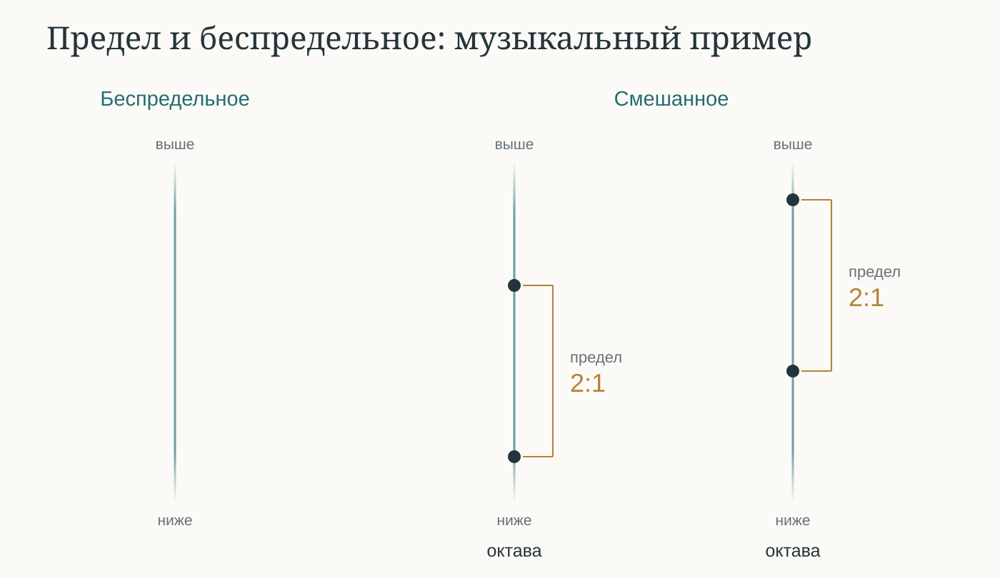

I. 11а–12b
Беседа начинается in medias res: Филеб выходит из беседы и передает свой тезис Протарху. Хотя подобная смена собеседников не редкость у Платона (ср., например, «Горгий» или «Государство»), ни один диалог не начинается с такой передачи слова. Завершается диалог тоже не вполне обычно: Протарх собирается еще что-то напомнить Сократу, и на этом текст обрывается. Подробнее о композиции см. Введение.
При этом практика передачи тезиса известна Аристотелю (Top. 159b34: οἱ παρ’ ἀλλήλων δεχόμενοι τὰς θέσεις), который оговаривается, что отвечающий может принять чужую точку зрения (159b28: ἑτέρου δόξαν), как это и происходит в «Филебе». Собеседникам правила ведения беседы понятны. Тот, кто принимает тезис, не обязан его разделять: Протарх делает «веселое лицо», но не более того. Филеб, передав свой тезис Протарху, уже не определяет, на что Протарх согласится или не согласится в разговоре с Сократом (12a9–11) (Bury 1897, 4–5).
Сократ заранее договаривается с Протархом о том, кто станет победителем в том случае, если ни удовольствие, ни разумение не получат первого места (11d–12a); впоследствии он апеллирует к этой договоренности (66e7-10). Показательно, что критерием предпочтения служит здесь «сродство» (συγγενής, 11e): если обнаружится уклад души, превосходящий удовольствие и разумение, оба собеседника уступят жизни, обладающей этим укладом; однако в споре за второе место преимущество получит тот из двух кандидатов, которому этот уклад более сроден. Как подчеркивает Барни, следует различать счастливую смешанную жизнь и то, благодаря чему она счастлива: именно последнее она считает искомым «третьим» и предметом сравнения по степени сродства (Barney 2016, 210–11).
Появление слова «сродство» в разделе не случайно: уже в начале разумение, мышление и память сопровождаются «тем, что им сродно» (11b7–8: τὰ τούτων αὖ συγγενῆ) — правым мнением и истинным рассуждением. Тем же словом будет назван и критерий финального суждения: там тоже придется решать, что «более сродно» (συγγενέστερον) благу и истине — удовольствие или разум (65b1–2, 65c2–3), — и по степени сродства благу выстраивается вся итоговая иерархия (66c1–2: τοῦ ἀγαθοῦ … μᾶλλον … συγγενῆ).
Изначально, несмотря на отсутствие артикля перед ἀγαθόν в 11b4, спор идет о высшем благе (ср. τἀγαθόν в 13b7), а не о том, какие вещи благи. (Shorey 1908, 344) обращает внимание на πᾶσι: удовольствие объявляется благом для всех живых существ, и именно всеобщность этого притязания проясняет смысл формулы без артикля. От того, как понимать этот исходный вопрос, зависит самый масштаб предприятия: согласно одному прочтению, «Филеб» идет дальше «Государства», раскрывая «сущность» (λόγος) блага (Delcomminette 2006, 13); согласно другому, вопрос переформулирован здесь как вопрос о благе-для-человека — о том, что делает человеческую жизнь благою, а не о природе блага самого по себе; Филеб и вслед за ним Протарх говорят о высшем благе для всех живых существ (11b5), в то время как для Сократа важно определить именно человеческое благо (Vogt 2019). Показательна и асимметрия в самой формулировке двух тезисов. Позиция Филеба заключается в том, что удовольствие есть благо (11b4). Сократ же о своем кандидате этого не говорит: он лишь «лучше и желаннее» удовольствия (11c1) и «полезнее всего» для тех, кто способен к этому приобщиться (11c2); это созвучно и логике финального суждения (Vogt 2019, 20).
Позиция Филеба и Протарха близка той, которую Аристотель приписывает Евдоксу в NE 10.1172b9–15:
Евдокс полагал, что удовольствие есть собственно благо (τἀγαθὸν) (i) потому, что видел, как все тянется к нему — как и обладающее суждением, так и лишенное его (καὶ ἔλλογα καὶ ἄλογα), и (ii) потому, что во всем предмет избрания (τὸ αἱρετὸν) — это добро, причем в наибольшей мере наибольшее добро; а что все обращено к одному, означает, что это для всех (πᾶσιν) высшее благо, ведь каждое существо находит благо для себя так же, как пищу, но благо для всех и то, к чему тянутся все, — это, мол, собственно благо (здесь и далее пер. Н.В. Брагинской).
С этим можно сравнить финальный выпад Сократа против тех, кто доверяет опыту быков и лошадей в рассуждении о благе (67b): для разумного существа благо не может быть независимо от его разумной природы. Схожий выпад мы находим в «Государстве» (9.586b).
В начале диалога удовольствия тела и удовольствия души еще не разграничены, но формулировка тезиса Филеба не ограничивает предмет спора телесными удовольствиями (Vogt 2019, 23). Разумение, мышление, память, правильное мнение и истинное рассуждение пока выступают совместно как соперники удовольствия. Такое противопоставление еще не означает, что удовольствие считается лишенным познавательного содержания: отношение между ним и перечисленными способностями только предстоит исследовать.
Первый шаг к преодолению дихотомии удовольствия и разумения Сократ делает, когда говорит (11d4–5), что они будут искать особые «уклад и расположение души» (ср. «Законы» 792d). Тем самым допускается, что удовольствие связано с душой и ее способностями не в меньшей степени, чем с телом. Протарх не спорит, хотя всех последствий своего согласия еще не понимает.
О связи диалогической формы с совместным поиском и о смене исходного вопроса см. также (C. Gill 2010, 47–49; notomi2010?).
II. 12b–13d
Тезис Сократа в этой части напоминает рассуждение Аристотеля в NE X 1173b28–29:
Удовольствия отличаются видом (τῷ εἴδει); а именно, удовольствия от прекрасных вещей и от постыдных различны.
На это Протарх резонно возражает, что различны или даже противоположны причины удовольствий, но не сами удовольствия как таковые (12d7–e2).
За этим разногласием стоит различие между самим переживанием удовольствия и тем, что его доставляет. В обыденной речи мы иногда называем «удовольствием» и то и другое. Приводя в пример удовольствия распущенного и воздержного, неразумного и разумного (12c8–d4), Сократ пытается перейти от различия предметов удовольствия к различию самих удовольствий (13a7–b5). Протарх отказывается от этого перехода: пусть предметы удовольствий противоположны (12d7–8: ἀπʼ ἐναντίων… πραγμάτων), само удовольствие как таковое остается однородным (Harte 2004, 114–17). Тем же приемом Протарх воспользуется позже, в споре о ложных удовольствиях, отказываясь признать, что ложность мнения, с которым связано удовольствие, распространяется на само удовольствие (37e–38a) (Harte 2004, 116–17). По сути, здесь заранее разыгрывается сюжет, который позже станет центральным для диалога — и который в разных изводах занимает и философов Нового времени: однородно ли удовольствие как таковое или неоднородно по самой своей природе (ср. спор утилитаристов о «высших» и «низших» удовольствиях).
Различение удовольствия и его предмета, однако, само по себе еще не объясняет связи между ними. (Kenny 2003, 90–93) возражает против понимания удовольствия как особого ощущения, которое лишь сопровождает приятное занятие. Получать удовольствие от слушания музыки — не значит просто слушать музыку и одновременно испытывать такое ощущение: иначе связь между ними пришлось бы устанавливать как внешнюю причинную зависимость. Это возражение относится и к предположению одного однородного ощущения, и к предположению множества качественно различных ощущений, связанных с занятиями лишь случайным образом. Применительно к нашему спору оно позволяет точнее поставить вопрос: входят ли различия того, чем наслаждаются, в определение самих видов удовольствия?
Уже поэтому сложно согласиться с тем, что за Протархом (Mr. First Principle, от греч. πρῶτος «первый» и ἀρχή «начало») скрывается Аристотель; см. Введение. Протарх не только защищает позицию, близкую позиции Евдокса (а Аристотель с ним, как мы видели, спорит), но и очень неохотно принимает вполне аристотелевский тезис, что «удовольствия различаются видом» (NE 10.1173b28–29). Аристотелю ясно (NE 10.1174a8–9), «что удовольствие не есть собственно благо» (οὔτε τἀγαθὸν ἡ ἡδονή) и что «не всякое удовольствие достойно избрания» (οὔτε πᾶσα αἱρετή) — Протарх признает это лишь позже, после длительного рассуждения.
Пример с цветами показывает, что вещи, принадлежащие к одному роду, могут существенно различаться и даже быть противоположными: белое и чёрное остаются цветами, несмотря на свою противоположность. Однако сам по себе этот пример ещё не опровергает тезис Протарха о том, что всякое удовольствие — благо. Протарх может признать, что удовольствия воздержанного и распущенного человека различаются по своим причинам и даже по виду, но продолжать считать благими и те и другие. Чтобы опровергнуть его тезис, нужно показать не просто различие между удовольствиями, а то, что они различаются именно в отношении к благу. Именно поэтому он соглашается с предложением Сократа обсудить различные виды удовольствий, не усматривая в этом угрозы для своего тезиса; позже, однако, в контексте разговора о благих и дурных удовольствиях Протарх вновь отрицает их несходство именно как удовольствий (13b6–c5). Согласие последует лишь в 14a8–9, когда Сократ распространит то же требование на знания (Proios 2025, 14).
Сократ и здесь, и далее настаивает на разнице между удовольствиями добродетельного и испорченного человека: в конце концов в смесь благой жизни попадают удовольствия, сопутствующие здоровью и благоразумию, «да и все те, что стали спутниками любой добродетели и повсюду за ней следуют, как за богом» (63e4–6). В дальнейшем они будут допущены в благую жизнь, потому что не вносят раздора (στάσις) в дом, где обитают разум и рассудительность (63e8–64a1, 64b7–8).
III. 13e–14b
В этом разделе Сократ совершает важный тактический маневр: он проецирует проблему «единого и многого» на собственного кандидата — знание (разум). Протарх выражает явное удовлетворение тем, что обе теории теперь находятся в «равном положении». Его готовность признать неоднородность знания связана с желанием уравнять положение сторон.
Уступка эта важнее, чем кажется на первый взгляд. В литературе ее называют «важнейшей уступкой» гедониста за весь диалог (Frede 1993, xviii–xix): именно она открывает возможность для всей последующей «диалектической» части — классификации видов знания и удовольствия, которая займет добрую половину «Филеба». Если бы Протарх не согласился, что удовольствие, как и знание, может оказаться множественным и неоднородным, дальнейшая дискуссия была бы заблокирована.
Стоило ли ему уступать? С одной стороны, Сократ прямо предостерегает от «любви к победе» (φιλονικία, 14b5) как от помехи для совместного поиска истины; с другой — Протарх объясняет свое согласие равенством положения сторон, не уточняя, убедили ли его предыдущие примеры Сократа. Для Сократа же деление на виды необходимо для того, чтобы рассуждение не «сгинуло, как сказание» и чтобы самим не «спастись» ценой какой-то бессмыслицы (14a: ἀλογία).
Итог раздела, впрочем, не сводится к перемирию: Сократ предлагает не скрывать различий внутри «твоего и моего блага» — между видами удовольствия и между видами знания (Kamerbeek 1957, 228), а поместить их посредине и мужественно принять любой исход спора — будь то удовольствие, разумение или «нечто третье» (14b; ср. 11d–12a).
IV. 14c–15c
Тезис «одно — это многое, а многое — одно» (14c8–10) спровоцирован предыдущей дискуссией, в которой Протарх согласился, что удовольствие и знание, будучи каждое чем-то одним, имеют много несходных видов (12c6–8; 13e9–14a2; 14a8–9). Протарх пока думает не о единстве рода, содержащего противоположные виды, но о единстве вещи, несущей противоположные свойства (14c11–d3) (Striker 1970, 11; Frede 1993, xxi). Сократ относит этот пример к «детским» загадкам, добавляет собственный пример и лишь затем формулирует серьезные вопросы.
Первая загадка: один человек может обладать множеством противоположных качеств (быть одновременно большим и маленьким, тяжелым и легким). Это ведет к трудности, если мы считаем невозможным, чтобы одна и та же вещь была единой и множественной. Ср. «Софист» 251а5–с7, где эта загадка описывается как интересная лишь юношам и «недоучившимся старикам»:
Говоря об одном человеке, мы относим к нему много различных наименований, приписывая ему и цвет, и очертания, и величину, и пороки, и добродетели, и всем этим, а также тысячью других вещей говорим, что он не только человек, но также и добрый и так далее, до бесконечности; таким же образом мы поступаем и с остальными вещами: полагая каждую из них единой, мы в то же время считаем ее множественной и называем многими именами.
Поэтому (Crivelli 2019, 35) понимает «загадку» Протарха так:
- Протарх един.
- Протарх тождествен высокому Протарху, низкому Протарху, тяжелому Протарху, легкому Протарху и т.п.
- Все эти Протархи — многое.
- Единое есть многое.
Однако, как признает сам (Crivelli 2019, 35), при таком прочтении оказывается несущественным, что предикаты друг другу противоположны, хотя Протарх подчеркивает именно это. Поэтому (Striker 1970, 12–13) видит смысл загадки в том, что одна и та же вещь обладает несовместимыми свойствами. Промежуточную позицию занимает (Delcomminette 2006, 52 n. 2), следуя одному из предложений (Frede 1997, 116): καί («и даже») в 14d1 вводит противоположности как частный случай множественности. При таком прочтении речь идет о том, что само по себе множество предикатов не подрывает единства вещи, в то время как противоположности не могут сказываться об одном и том же в одном и том же отношении согласно принципу непротиворечивости. Уже в «Пармениде» (129a–e) Сократ говорит, что применительно к чувственным вещам в таких рассуждениях нет ничего удивительного, но они представляют трудность применительно к самим идеям.
Вторая загадка, которую добавляет сам Сократ (14d8–e4), связана не с множеством (противоположных) атрибутов, а с наличием у единого частей. Применительно к чувственно воспринимаемым вещам она тоже отвергается в «Пармениде» (129c–d) как малоинтересная (Crivelli 2019, 36). (Meinwald 1996, 99–100) обращает внимание на союз ἐπεὶ μηδέ (14d8): Сократ отбрасывает пример Протарха, «поскольку даже» его собственный пример не стоит внимания, — значит, второй пример ближе к серьезной проблеме, чем первый. Эта близость подчернута лексически: διελών (14e1) предвещает διαίρεσις (15a7), а расчленение тела на члены — постоянная метафора Платона для деления рода на виды (Phdr. 265e; Plt. 287c).
Отвергая оба примера, Сократ переводит обсуждение к единству и множеству того, что в «Пармениде» названо «виды как таковые» (129d8: αὐτὰ καθ’ αὑτὰ τὰ εἴδη). В 15a6 он называет такие единства «генадами», приводя в пример «человека», «быка», «прекрасное» и «благо», а в 15b1 говорит о «монадах». От того, обозначают ли эти слова одни и те же единства или единства на разных уровнях деления, зависит понимание последующих вопросов.
Для чувственной вещи оба парадокса разрешаются легко: противоположности сказываются о ней в разных отношениях или о разных ее частях, а «одно» и «многое» требуют разных дополнений — один человек, много членов (Striker 1970, 13; Crivelli 2019, 37). Если противоположности — черное и белое, они распределяются по частям, и первый парадокс сводится ко второму (Gosling 1975, 81). Перенесем теперь первый парадокс на род. Например так: удовольствие одно, но удовольствие рассудительного и удовольствие распущенного противоположны друг другу (12c8–d4). Чтобы различить эти удовольствия, нужно разделить род на виды; именно так Сократ уже поступил с цветом и формой (12e7–13a1).
Однако это деление требует объяснения: если речь идет о неизменных сущностях, оно не может означать ни уничтожения рода, ни возникновения прежде не существовавших видов. В этом свете 15b1–8 можно понимать так:
Следует ли признавать, что такие монады действительно существуют? Если генада — родовое единство, а монады — различаемые в нем виды, вопрос касается реальности этих видов: существуют ли, например, удовольствие рассудительного и удовольствие распущенного как различные единства, хотя оба суть удовольствие? Это продолжает спор с Протархом, который отрицал различия удовольствий именно как удовольствий (12e1–2, 13c5).
Как эти многие монады, каждая из которых остается одной и той же, не возникает и не гибнет, тем не менее могут быть тем одним — генадой? Теперь существование видов допущено; требуется понять их отношение к единству рода. Неизменность усиливает трудность: виды нельзя объединить посредством превращения или слияния, при котором они перестали бы существовать порознь.
Как такое единство соотносится с возникающим и беспредельным? Если оно присутствует во многом по частям, то оказывается раздробленным; если целиком оказывается одновременно в одном и во многом, то кажется отделенным от самого себя. Требуется объяснить, как одно и то же умопостигаемое единство остается одним при таком присутствии во многом.
Первые два вопроса так связывают (Muniz and Rudebusch 2004, 401–3): речь идет сначала о существовании монад, выявляемых при делении генады, затем об их единстве. Вторая фраза имеет множественное подлежащее ταύτας, «эти», и единственное предикативное выражение μίαν ταύτην, «то одно». В этом прочтении вопрос не в том, как каждая неизменная монада «тем не менее» остается самой собой, а в том, как многие неизменные монады суть одно. Такое прочтение сохраняет смысл ὅμως и связывает апорию с предыдущим спором об удовольствии. Однако собственное объяснение третьего вопроса Мунис и Рудебуш не дают: следствия своего прочтения для этой апории они прямо оставляют за пределами статьи (403 n. 30). Рудебуш сохраняет предложенное в 2004 г. чтение в своем позднейшем комментарии (Rudebusch 2023, 76–81).
Переход от многих единств к одному замечали и раньше, но понимали по-разному. (Archer-Hind 1901, 231) относил второй вопрос к объединению отдельных идей в высшей идее — блага в «Государстве» или живого существа в «Тимее»; ср. мнение Дж. Э. Мура, которое приводит (Bury 1897, 215), и мнение П. Фридлендера, которое приводит (Hackforth 1945, 20). Для них речь идет об устройстве всей области идей, а не об отношении любого рода к его видам. (Hahn 1978, 164–67) видит во втором вопросе две связанные проблемы: как многие идеи образуют единое целое и как можно утверждать, что каждая из них существует, не нарушая тем самым её единства.
Второй вопрос связывали с отношением рода и видов еще до Муниса и Рудебуша. Так, (Dancy 1984, 173–75) объясняет трудность через противоположные видовые признаки: если род считать одной определенной вещью, не придется ли приписать ему признаки одного из его видов, исключив остальные? Неизменность усиливает затруднение: изменяющаяся вещь может обладать противоположными свойствами в разное время, но для неизменного рода такое объяснение невозможно. Это объяснение Дэнси проясняет с помощью довода из «Топики» VI 6, не утверждая, что Платон имел в виду именно этот довод. (Meinwald 1996, 100–101) предлагает подразумевать: как единство остается одним, «хотя делится на многие виды и подвиды». (Barker 1996, 162–64) обращает внимание на переход от множественного «эти» к единственному «это одно»: например, как красное, желтое и остальные цвета, оставаясь различными, составляют цвет как единый род. При этом он называет монадами и цвет как род, и отдельные цвета — красное, зеленое, желтое (162–163); одно и то же единство может содержать виды и само входить в более общий род (164).
(Frede 1997, 119 n. 12, 121–124) прямо указывает, что «генада» и «монада» употребляются как синонимы, но, в отличие от Баркера, выделяет два вопроса: существуют ли такие единства и как их неизменное единство совместимо с присутствием во множестве возникающих вещей. При этом она признает, что контекст заставляет ожидать вопроса о роде и его видах, и считает переход к чувственным вещам трудностью, требующей объяснения (124). В последующем разборе λόγοι она показывает, что проблема имеет общую структуру на обоих уровнях: как «человек» сказывается о Сократе и Платоне и как «животное» сказывается о человеке и быке, сохраняя единую природу (126–127). При этом она прямо связывает ответ на апории 15b с «божественным методом».
(Delcomminette 2006, 61–62) понимает первый вопрос как вопрос об обоснованности предположения: вправе ли мы полагать, что единства, с которых начинается исследование, действительно существуют? Вторую апорию он объясняет через единство определения (67–71): как многие части определения составляют определение одного вида — например, как «животное» и «двуногое» определяют человека. Это единство определяющих признаков, а не единство рода, охватывающего разные виды.
Особое объяснение второго вопроса предлагает (Anscombe 1966, 406–7). Каждая идея должна быть чем-то одним, но ни одна из многих идей не тождественна единому самому по себе. Если мы различаем идею человека и само единое, нужно объяснить, как человек сам по себе всё же составляет одно единство. Поэтому Энском предлагает обратить внимание на идеи, которые сами причастны другим идеям. В случае единства эта причастность особенно существенна: без единства предмет вообще не мог бы считаться отдельной идеей.
К этому рассуждению обращается [Carpenter (2009), 121 n. 47-48; 126 n. 61], рассматривая более общий вопрос о том, как различные свойства составляют одно умопостигаемое целое; свое прочтение второго вопроса она называет наиболее близким к решению Муниса и Рудебуша. Второй и третий вопросы у нее относятся к двум сторонам одной проблемы. Второй вопрос состоит в том, как различные неизменные свойства и отношения составляют одно определенное целое. Например, прекрасному присущи соразмерность, благо, единство и тождество, но оно не тождественно ни одному из этих свойств в отдельности. Третий вопрос возникает, если рассмотреть одно из этих свойств в его отношении к различным целым. Так, соразмерность присуща не только прекрасному, но также здоровью и правильным геометрическим телам. Как она остается одной и той же, присутствуя в этих различных единствах? Поэтому третий вопрос не ограничивается причастностью чувственных вещей идеям: он касается также того, как одно свойство принадлежит многим умопостигаемым целым, не утрачивая единства и не устраняя различий между ними (Carpenter 2009, 123–27).
Различение генад и монад принимают также (Bravo 2010, 26–27) и (M. L. Gill 2010, 39–41), но по-разному объясняют отношение между ними. Браво понимает его как включение монад в генаду. Гилл же поясняет это отношение на примере разных наук об одном предмете. Генаде «человек» у нее соответствуют монады, выделяемые разными науками: человек как биологическое существо, как носитель здоровья и болезни, как член политического сообщества. Каждая наука рассматривает человека в определенном отношении, выделяя одни его свойства и отвлекаясь от других. Второй вопрос состоит в том, как эти различные умопостигаемые единства могут быть одной и той же генадой — человеком.
Напротив, (Crivelli 2019, 38 n. 10) прямо возражает Мунису и Рудебушу, а также Гилл: «такие монады», по его мнению, отсылают к уже названным генадам, а не к результатам их деления. При этом сам второй вопрос он тоже понимает через отношение рода и видов (38–39). Таким образом, можно принимать это содержание вопроса, не принимая специального терминологического различия.
Наконец, (Proios 2025, 7, 10–11) уточняет само понимание родового единства на примере начального спора об удовольствии. Цвета различаются именно теми признаками, благодаря которым каждый из них является цветом; сходным образом должны быть связаны единство удовольствия и различия удовольствий. Здесь недостаточно представить вид как сумму общего родового признака и независимого от него отличия. Проиос связывает этот анализ с апориями 14c–15c и ссылается на Муниса и Рудебуша (11 n. 31), но специального различения генад и монад не обсуждает. Последующая литература, таким образом, подтверждает значение вопроса о единстве рода, но не дает оснований считать различение генад и монад общепринятым.
Все три вопроса взаимосвязаны: и деление генад на виды, и присутствие умопостигаемого единства во многом ставят проблему сохранения единства во множественности на разных уровнях. Противоречие возникает, если единство рода понимать как исключающее внутренние различия. К такому пониманию склоняется Протарх, когда из общей природы удовольствий заключает об их неразличимости именно как удовольствий (12e1–2, 13c5). Этот ход напоминает рассуждения «недоучившихся стариков» из «Софиста», не допускающих, чтобы одно было многим (251b–c).
Первый вопрос при этом нельзя изолировать от двух остальных: если виды невозможно мыслить одновременно различными, объединенными в род и осуществляющимися во многих вещах, под сомнение попадает и их существование. Эту связь подчеркивает (Crivelli 2019, 39–41). Поэтому дальнейшее рассуждение мы рассматриваем как ответ на всю триаду. В этом наша интерпретация расходится с (Meinwald 1996, 102), которая считает программным для «Филеба» только второй вопрос, относя первый к средним диалогам, а третий — к «Пармениду». Ближе предложенный (Ionescu 2019, 3–4) подход: все три вопроса получают косвенный ответ в исследовании удовольствия и знания, опирающемся на четырехчастное устройство сущего.
Иначе оценивает связь апорий с дальнейшим рассуждением (Delcomminette 2002, 29–31, 41–42): три вопроса порождаются тремя этапами диалектики — полаганием единства, делением и переходом к беспредельному, — поэтому последующее описание метода показывает их источник, а решения следует искать в других диалогах. Однако (Carpenter 2009, 121 n. 49) обращает внимание на то, как вводится метод. Протарх просит найти выход из затруднений об одном и многом, и в ответ Сократ предлагает «божественный метод» (16a–c). Такая последовательность позволяет видеть в методе средство разрешения апорий, а не только объяснение их происхождения.
Вводя «дар богов», Сократ связывает способ исследования с устройством самого исследуемого: оно состоит из одного и многого и имеет в своей природе предел и беспредельность (16c–d). Поэтому требование находить единства и прослеживать промежуточные деления опирается на представление о том, как устроено сущее. К пределу и беспредельному Сократ прямо возвращается в 23c, добавляя к ним смешанное из обоих и причину смешения (23c–d). Так возникает четырехчастное деление. Его связь с прежними вопросами обнаруживается и в 23e: Сократ вновь предлагает выяснить, как каждый из этих двух родов — предел и беспредельное — является одним и многим.
В нашем понимании описание метода и четырехчастное деление развивают общий ответ на апории 15b. Метод направляет исследование единств и различий, а учение о пределе и беспредельном объясняет, благодаря чему исследуемое обладает определенностью. Для третьего вопроса особенно существенно, что такое объяснение распространяется на возникающее. (Hahn 1978, 168–69) связывает эту апорию с выражениями «становление к сущности» и «возникшая сущность» в 26d–27b: они должны объяснить, как становящееся обладает бытием, сохраняя отличие от неизменного.
В этой перспективе третья апория касается не только множества отдельных случаев, но и того, как определенный вид осуществляется в области, допускающей неопределенное «больше» и «меньше». Совместное рассмотрение метода и онтологии позволяет объяснить, на чем основаны различия видов, как эти виды связаны между собой и как они осуществляются во множестве случаев. Музыкальный пример поясняет связь этих задач. Например, определенный музыкальный интервал отличается от других благодаря соотношению звуков: исследование обнаруживает основание различия видов в самом предмете. Отношения между интервалами позволяют рассматривать их как части одной системы, не отождествляя их друг с другом. Один и тот же интервал может осуществляться в разных звучаниях, поскольку в них воспроизводится определяющее его соотношение; само соотношение при этом не дробится на части. См. §5, §6 и §9.
(Löhr 1990, 92–94) считает, что апории определяют дальнейший ход диалога, но в первоначальной формулировке ответа не получают. В частности, остается объяснить, каким образом рассмотрение отношения идеи к отдельным вещам проясняет отношение рода к его видам. В нашем прочтении ответ восстанавливается из дальнейшего хода диалога: Сократ не дает здесь отдельного доказательства существования идей и не возвращается к трем вопросам в форме нумерованных решений. Но различение видов удовольствия и знания должно показать, что эти единства можно последовательно находить, соотносить и распознавать во множестве случаев. Неизменность и самотождественность не означают внутренней простоты.
V. 15d–17а
Сократ говорит о «бессмертном и нестареющем» свойстве логосов, которые всегда заключают в себе «единое и многое». Это свойство смущает неокрепшие умы: для юношей оно становится поводом для интеллектуальной забавы, цель которой — запутать собеседника. Здесь, вероятно, имеются в виду «загадки» вроде тех, что были упомянуты в §4. Они построены на том, что многое оказывается одним («сворачивание»), а одно — многим («развертывание»).
Обратим внимание, что такие «речевые игры», по словам Сократа, приятны: тем самым мы понимаем, во-первых, что не всякое удовольствие связано с телом, а во-вторых — что не всякая интеллектуальная активность достойна включения в благую жизнь. Ср. «Софист» 259d:
Но объявлять тождественное каким-то образом иным, а иное — тождественным, большое малым или подобное неподобным и находить удовольствие в том, чтобы в рассуждениях постоянно высказывать противоречия, — это не истинное опровержение, здесь чувствуется новичок, который лишь недавно стал заниматься существующим.
«Ребяческому» обращению с логосом Сократ противопоставляет «дар богов», или диалектический метод. О нем же Платон говорит в «Федре» (266b) и в «Политике» (285b). В «Филебе» он представлен как дар богов, брошенный людям через некоего Прометея. В «Протагоре» 321d о Прометее сказано, что он подарил людям τὴν ἔντεχνον σοφίαν, тем самым сделав их причастными божественному уделу в нарушение божественной воли; здесь Прометей выступает посланником богов (Месяц 2012, 332–33). Сократ говорит, что благодаря этому методу сделаны открытия (ἀνηυρέθη) во всех искусствах (16c2–3).
(Gosling 1975, 83) видит в Прометее Пифагора. (Huffman 2001, 71) отвергает отождествление Прометея, мифического покровителя искусств, с каким-либо философом, а «древних», передавших учение, он связывает с Филолаем и его последователями; в этом за ним следует (Bossi 2013, 274). Пифагорейский источник рассуждения о пределе, беспредельном и числе обсуждает также (Kahn 2010, 65–66). Однако связь исходных принципов с пифагорейской традицией еще не означает, что вся описанная процедура заимствована у пифагорейцев в готовом виде. Осторожность в таком заключении рекомендует (Benitez 1989, 51–53); сам Хаффман подчеркивает платоновское преобразование предшествующей методологии (Huffman 2001, 84).
В сообщении «древних» соединены два положения: утверждение об устройстве предметов и предписание исследователю. Поскольку предметы устроены определенным образом — τούτων οὕτω διακεκοσμημένων, — следует искать в каждом случае одну идею, а затем устанавливать число дальнейших единств. Метод имеет онтологическое основание: способ исследования должен соответствовать устройству исследуемого (Oberhammer 2016, 246). Сократ особенно подчеркивает, что идею предстоит найти, «поскольку она там есть» (16d2).
Дальнейшее предписание требует не останавливаться на противоположности одного и неопределенно многого. Нужно установить промежуточные единства и повторять исследование применительно к каждому из них, пока не станет ясно, сколько их. Именно пропуск промежуточных различий характеризует эристику. В принятом здесь понимании слов «быстрее и медленнее, чем следует» эристик либо поспешно объявляет многое одним, либо слишком долго отказывается признать его единство. В обоих случаях теряется определенная структура, благодаря которой исследование может стать знанием.
Сторонники первого прочтения расходятся в том, что именно обозначает τῶν ἀεὶ λεγομένων εἶναι. (Kahn 2010, 59) включает в его объем и идеи, и чувственные вещи; аналогично читает (Benitez 1989, 41–42). Напротив, (Reshotko 2010, 93–97) ограничивает формулу чувственными предметами: «всегда говорится» она понимает как указание на то, существование чего признавали все люди во все времена, тогда как существование идей оспаривается. Однако наречие не обязательно подразумевает согласие всех говорящих. Иной аргумент в пользу ограничения чувственным предлагает (Granieri 2024, 88–95). Он обращает внимание на διακεκοσμημένων в 16d1 и сопоставляет его с описаниями упорядоченного космоса, в том числе в 28e и 30c самого «Филеба». При этом ограничение исходной формулы чувственными вещами не исключает идеи из дальнейшего исследования.
При широком понимании формулы — то есть при отнесении ее и к идеям, и к вещам — возникает трудность: как предел и беспредельность принадлежат не только формам, но и отдельным чувственным предметам? (Hackforth 1945, 24 n. 1) предлагает различать два значения беспредельного: первичную числовую неограниченность множества и вторичную неопределимость индивидов. На это (Striker 1970, 19–20) возражает, что невозможность определить индивидуальный предмет через род и видовое отличие еще не означает, что он неопределен. Предложение Экрилла рассматривать неопределенность как неограниченное число акцидентальных предикатов тоже не кажется ей убедительным, так как применительно к идеям речь идет о множестве предметов, а применительно к отдельному предмету — о множестве его предикатов (Striker 1970, 21–22).
Выход из этой трудности предлагает (Frede 1997, 134–35). Она связывает выражение τῶν ἀεὶ λεγομένων εἶναι с упоминанием наук в 16c2–3. Родовые и видовые единства обнаруживаются в конкретной предметной области, например грамматике или музыке. В этом отношении ее прочтение сближается с замечанием (Gosling 1975, 83): слово «удовольствие» объединяет неопределенный диапазон, внутреннее устройство которого предстоит выяснить. Общее название задает единую область поиска, и в этой области следует выявить определенное количество видов. После этого каждое из найденных единств можно «отпустить в беспредельное». (Frede 1997, 137–38) поясняет это на примере грамматики: разнообразие произношений может продолжаться без конца, но для владения грамотой достаточно распознавать определенные звуковые виды. Такой же «грамотности» Сократ требует и в области удовольствия и страдания, предполагая, что и здесь возможны эристическая поспешность и медлительность.
(Frede 1997, 143–44), однако, различает определенность родов и видов, устанавливаемую методом, и определяющие пропорции, о которых пойдет речь в четырехчастной онтологии. Требование узнать точное число видов еще не означает, что само деление должно представлять собой гармоническое разбиение континуума. (Carpenter 2007) возражает: уже в 16c9–d2 Сократ выводит требования метода из устройства предметов; в 23b–c он прямо возвращается к названным прежде пределу и беспредельному. Поэтому последующее рассуждение объясняет, благодаря чему виды, обнаруживаемые методом, обладают определенностью. Вопрос о числе видов предполагает выяснение того, что делает каждый из них именно этим видом и отличает от остальных.
В случае музыки перед исследователем открывается область неопределенного варьирования высокого и низкого; знание требует установить определенные интервалы и отношения между ними (Barker 1996, 145, 155–58). Сходным образом буквы в примере Тевта не предполагаются заранее данными как готовый список изолированных единиц: их предстоит обнаружить самому исследователю в непрерывном континууме звучащей речи (Menn 1998, 294–98). Таким образом, разум выявляет структуру, благодаря которой речь становится предметом искусства.
Это обеспечивает связь метода с четырехчастной онтологией, которая раскрывает его онтологическое основание (Meinwald 1998, 168–70). Так, в музыке отношения определяют границы видов, которые диалектик должен обнаружить (Meinwald 1998, 177–80). Отношение 2:1 между звучащими длинами одной струны при неизменном натяжении определяет октаву. Конкретные созвучия могут более или менее точно воспроизводить этот интервал; октава как определенный вид выступает для них в качестве нормативной природы.
При таком прочтении «божественный метод» оказывается напрямую связан с тремя апориями выше. Утверждение о присутствующей идее отвечает на вопрос о существовании, хотя изначально является утверждением, а не доказательством; в этом можно согласиться с (Crivelli 2019, 45–47). Поиск видов обнаруживает уже имеющиеся отношения между видами и родами, не изменяя исследуемые единства.Тем самым род можно мыслить как единство многих видов, каждый из которых сохраняет собственную определенность. Наконец, вопрос о присутствии идеи в беспредельном множестве получит дальнейшее объяснение через понятие порождения. В предлагаемом прочтении идея определяет природу возникающего: ее присутствие в становлении не следует понимать как пространственное распределение целого или его частей. Эту связь определяющей природы и ее осуществления раскрывает описание третьего рода в §9.
VI. 17a–e
В 17a–b Сократ предлагает Протарху вспомнить уроки грамоты. Знать, что звук представляет собой нечто одно и что произносимых звуков бесконечно много, еще не значит владеть этим искусством. Для этого нужно различать, какие звуковые элементы встречаются в речи и сколько их. Пример поясняет требование предыдущего раздела: между общим единством и неопределенным множеством необходимо найти определенные различия. Под «грамматикой» здесь понимается искусство грамоты. Пример музыки продолжает это объяснение, но переносит внимание со звуков речи на различия звуков по высоте.
Согласно (Ryle 1960), для Платона «буквы» (γράμματα, στοιχεῖα) относятся прежде всего не к графическому начертанию, а к фонетическому звучанию, поэтому изучение букв предполагает не столько умение их выводить на папирусе, сколько умение различать фонемы. Такое понимание опирается, в частности, на описание букв в «Теэтете» 203b: сигма определяется как «совсем безгласная, это какой-то шум», а бета — «и не звук, и не шум». Однако (Gallop 1963, 365–68) возражает против сведения знания букв к фонетическому умению: обучение грамоте предполагает соотнесение звуков с письменными знаками. То, что Сократ объясняет грамоту через различение звуков, еще не исключает из этого искусства чтение и письмо.
В музыкальном примере Сократ сначала различает более низкое, более высокое и равное по высоте (17c). Эти определения предполагают сравнение звуков, но еще не показывают, насколько один выше или ниже другого. Поэтому требуется узнать интервалы (διαστήματα): сколько их, каковы они и какие звуки их ограничивают. Следующий шаг — изучение систем (συστήματα), то есть упорядоченных сочетаний интервалов, называемых «гармониями» (17c–d). Здесь гармония обозначает определенное устройство звуков и интервалов, задающее возможности мелодии. (Barker 1996, 147–48) подчеркивает, что музыкальный пример добавляет к перечислению видов знание отношений, благодаря которым они составляют целое.
Сходное требование предъявляется к грамоте. В «Софисте» (253a–b) оба искусства сопоставляются именно как знание возможных сочетаний: грамотный знает, какие буквы могут соединяться, а музыкант — какие звуки сочетаются друг с другом. Гласные играют роль «связи» (δεσμός), без которой остальные буквы не могут соединиться.
На этой основе грамматика и музыка становятся образцами для диалектики: диалектик должен знать «какие роды (τῶν γενῶν) с какими сочетаются (συμφωνεῖ) и какие друг друга не принимают» (Soph. 253c) (Vegetti 1988, 402). Таким образом, определить элементы исследуемого — значит также выяснить, в каких отношениях они могут составлять целое. В «Филебе» зависимость знания отдельных букв от знания их связей получит дальнейшее объяснение в рассказе о Тевте; см. §7.
VII. 18a–20а
В 18a–b Сократ описывает два направления исследования: от одного через определенное число видов к беспредельному множеству и, наоборот, от беспредельного множества через определенное число к одному. В обоих случаях необходимо пройти через промежуточные различия. Рассказ о Тевте должен показать, как осуществляется второе движение.
В этом отрывке Платон переворачивает привычный взгляд на «буквы» (στοιχεῖα) как на «кирпичики», из которых строятся слова. Буквы — не исходные атомы, а конечный продукт анализа (Burkert 1959). Тевт, создавая грамматику, не просто группирует готовые звуки. Он делит (διῄρει) непрерывный речевой поток, и только в результате этого членения буквы выделяются как различимые элементы речи.
Однако Сократ вводит пример Тевта как пример движения от беспредельного к одному (18b1-2). (Hackforth 1945, 26) понимает это движение как собирание и усматривает непоследовательность: чтобы собрать буквы в единый род, Тевт должен уже иметь представление об этом роде; тогда в конце исследования он лишь дает название тому, что знал с самого начала. (Menn 1998, 293–300) справедливо возражает, что исходное единство речи и открываемое единство букв — разные вещи. Тевту первоначально дана речь, а не множество уже обособленных букв, ожидающих классификации. Он должен обнаружить повторяющиеся элементы в разных речевых сочетаниях. Это и есть собирание: сопоставляя различные сочетания, мы узнаем в них один и тот же элемент. Деление необходимо, чтобы при этом не принять разные элементы за один и тот же.
(Delcomminette 2006, 146–52) считает, что движение от беспредельного к единому совместимо с делением, как в примере Тевта, потому что Тевт впервые устанавливает саму систему букв: единство становится понятным благодаря установленным различиям. В этом смысле его трактовка близка пониманию Менна; однако, в отличие от него, он не отождествляет движение к единому с собиранием: и собирание, и деление могут участвовать в движении в обоих направлениях.
(Sedley 2003, 27) предполагает, что ономатет, очевидно, производит στοιχεῖον (элемент, буква или звук речи) от στοῖχος («ряд»). Этимологически связь στοιχεῖον со στοῖχος и στείχω («ступать») несомненна; первоначально στοιχεῖον, однако, означало не специально букву (в алфавитном ряду), а всякое звено в последовательности или системе, и в этом значении употреблялось применительно к математическим положениям, служащим основой для других положений, откуда развивается значение «основания», «начала» (Burkert 1959). Евдем свидетельствует о том, что Платон первый применил στοιχεῖον к физическому космосу (fr. 31 Wehrli), однако значение «начала» не зависит от платоновской грамматической метафоры.
(Sedley 2003, 27) предлагает видеть в γραμματική дополнительную связь с γραμμή («черта, линия»), наряду с обычной связью с γράμμα. В 18c–d Тевт замечает, что нельзя узнать ни одну букву без всех остальных: их связь позволяет рассматривать все буквы как предмет единого искусства. (Carpenter 2007) подчеркивает взаимное прояснение частей: природа каждого элемента становится понятна в его отношениях с другими элементами целого. Знающий грамоту понимает, какие буквы сочетаются друг с другом, образуя слоги и слова; подобным образом в «Софисте» 252e–253c диалектик знает, какие виды смешиваются, а какие нет. Как показывает (Nehamas 1989, 276–77), знание здесь предполагает владение системой отношений внутри определенной предметной области.
Это перекликается с примером из «Политика» (277e–278d), где дети учат буквы не изолированно, а сравнивая их в разных слогах. Слог, будучи целым, служит контекстом для понимания его частей. В этом примере мы движемся от сложного к простому, причем узнавание одной и той же буквы в разных слогах позволяет затем правильно разобрать и воспроизвести эти слоги. Поэтому анализ и собирание поддерживают друг друга: элементы открываются через сравнение целых, а целые становятся понятными благодаря различению элементов (Menn 1998, 296–300).
Статус этих иллюстраций (грамматической и музыкальной) как иллюстраций именно деления сам по себе спорен. (Benitez 1989, 48–51) обращает внимание на то, что в схеме «род + видовое отличие» отличительный признак логически независим от рода (скажем, разумность возможна вне рода «животное»: мыслимы и разумные машины). Но Сократ приводит примеры деления одного признака, такого как высота тона. По мнению Бенитеса, Платон не проводит строгого различия между этими двумя процедурами и применяет метод деления к обеим.
Здесь, однако, полезно различить готовое определение вида и исследование, в котором оно только должно быть получено. Определение через род и видовое отличие фиксирует уже найденные основания членения; рассказ о Тевте показывает поиск самих этих оснований (Delcomminette 2006, 147, 151). Это не устраняет логического различия, отмеченного Бенитесом, но позволяет объяснить особенности примера через задачу первоначального открытия системы, не предполагая, что Платон просто смешивает две процедуры.
Но как понять, что элементы выделены корректно? Согласно реконструкции (Desjardins 1990, 72–75), подлинность элемента определяется его силой (δύναμις) вступать во взаимодействие, в котором возникает новое целое — эмерджентная сущность, несводимая к простой сумме элементов. Однако пригодность самих элементов еще не гарантирует удачности их соединения. Дежарден приводит пример одних и тех же букв, которые в последовательности mndi не образуют слова, а в последовательности mind образуют слово «ум». Получившееся целое обладает собственной силой — что-либо обозначать — и само может стать элементом более сложного целого, предложения (Desjardins 1990, 75–76).
Непосредственное применение этих примеров к спору об удовольствии Сократ объясняет в 18d–19b. Удовольствие и разумение названы каждое одним, но этого недостаточно для их сравнения: необходимо выяснить, как каждое из них является многим и какое определенное число предшествует беспредельному множеству. Протарх верно формулирует задачу: существуют ли виды удовольствия и разумения, сколько их и каковы они.
Сопоставляя эти примеры с дальнейшим обсуждением смешанной жизни, можно провести параллель между тремя областями (Desjardins 1990, 147–48):
- Грамматика: буква выступает элементом благодаря своей способности сочетаться (κοινωνεῖν) с другими в слогах и словах.
- Музыка: нота определяется через свое место в системе интервалов и ладов.
- Этика: истинное удовольствие — в предлагаемом прочтении то, что обладает способностью к “сожительству” (συνοικεῖν) с разумом.
Таким образом, примеры из музыки и грамоты служат философским фундаментом для рассмотрения элементов через их участие в образовании упорядоченного целого.
VIII. 20b–23b
Однако вместо того, чтобы приступить к делению, Сократ совершает неожиданный маневр, ссылаясь на внезапно пришедшее ему на ум «воспоминание». Это позволяет ему отложить применение «божественного метода» ко всем видам удовольствия и перейти к более общему вопросу о природе блага.
Прежде всего, Сократ устанавливает формальные требования, которым должен соответствовать любой претендент на звание блага: оно должно быть совершенным (τέλεον), самодостаточным (ἱκανόν) и таким, к обладанию чем всякое существо, распознавшее благо, стремится. В 20d употреблен глагол ἑλεῖν — «схватить», «завладеть»; прилагательное αἱρετός, «достойный выбора», будет прямо отнесено к жизни уже в 21d. Эти три признака (совершенство, самодостаточность и желанность) традиционно перечисляют вместе, как если бы они были однородны (Hackforth 1945, 31–32; Frede 1997, 173), хотя их роль в рассуждении различна. Но если первые два — это внутренние свойства блага, то третий — скорее мотивационный критерий. Как отмечает (Meyer 2019, 62) со ссылкой на (Frede 1997, 174–75), этот критерий — нечто вроде лакмусового теста для кислоты, в то время как совершенство и самодостаточность — её молекулярные свойства.
Для проверки этих требований Сократ предлагает рассмотреть кандидатов изолированно друг от друга. В жизни одного удовольствия Протарху обещаны величайшие наслаждения на протяжении всей жизни (21a–b), но исключены разумение, память, знание и истинное мнение. Человек в подобном состоянии не осознавал бы, что радуется в данный момент, не помнил бы прошлых наслаждений и не мог бы предвидеть будущие. Так возникает образ существования «медузы» или моллюска. При этом предложенную жизнь оценивает сам Протарх, сохраняющий способность рассуждать, а не воображаемое существо, этой способности лишенное (Harte 2014b, 12, n. 23). Таким образом, удовольствие само по себе не является «самодостаточным» в том смысле, что не способно само сделать жизнь достойной выбора.
С другой стороны, жизнь, наполненная знанием, но полностью лишенная удовольствия и боли, признается не более самодостаточной и не более желанной. Однако здесь нет столь же подробного доказательства: Протарх сразу отказывается от такой жизни (21d–e). Смешанную же жизнь, в которой соединяются удовольствие и разумение, Протарх предпочитает обеим отдельным жизням и считает, что всякий сделал бы тот же выбор (22a–b).
В результате этого мысленного эксперимента оба собеседника признают, что ни удовольствие, ни человеческое разумение, взятые порознь, не являются благом (22b-c). Каждой из отдельных жизней недостает того, без чего Протарх не согласен её выбрать. Но чтобы оценить силу этого вывода, необходимо уточнить, какое именно требование к благу оказалось невыполненным.
(Meyer 2019, 64–65) различает в мотивационном критерии два требования к благу:
- Достаточность: распознанное благо само побуждает нас стремиться к нему.
- Необходимость: обладание благом служит условием того, чтобы нас привлекало что-либо другое. Именно ко второму требованию относится оговорка 20d9–10: τῶν ἄλλων οὐδὲν φροντίζει — распознавший благо не заботится ни о чем другом, кроме того, что достигается вместе с благами.
Эксперимент с двумя жизнями обнаруживает взаимную зависимость удовольствия и разумения. В интерпретации Мейер отказ от жизни одного удовольствия означает, что без разумения мы не стали бы стремиться к удовольствию; отказ от жизни одного разумения — что без удовольствия мы не стали бы стремиться к разумению. Это не показывает, что кандидаты не проходят проверку на необходимость: каждый может быть необходимым условием привлекательности другого. Не доказана, впрочем, и их необходимость для привлекательности любого другого предмета: проверены только эти две жизни. Но необходимое условие не является достаточным. Из того, что без разумения удовольствие не привлекает нас, не следует, что одного разумения нам достаточно; то же верно и об удовольствии.
Решающей поэтому становится проверка на достаточность. Здесь Мейер различает слабое и сильное требования. Согласно слабому, X привлекает нас при прочих равных (ceteris paribus), хотя другие обстоятельства могут этому помешать. Согласно сильному, X привлекает нас безусловно: его привлекательность не зависит от обладания другими предметами стремления (ср. 20d9–10: τῶν ἄλλων οὐδὲν φροντίζει). Именно сильного требования не выдерживает ни один из соперников. Удовольствие может быть желанным само по себе, однако перестаёт делать жизнь достойной выбора, если исключить память, осознание испытываемого удовольствия и предвосхищение будущего. Его привлекательность зависит от того, чего жизнь одного удовольствия по условию лишена. Аналогичным образом Протарх не выбирает разумение при условии полного отсутствия удовольствия. Такая зависимость сама по себе ещё не означает, что удовольствие или разумение ценны лишь как средства.
Сказанное позволяет точнее оценить итог мысленного эксперимента. Вывод «удовольствие не есть благо» легко принять за опровержение всякой формы гедонизма. Но Мейер показывает, что такой вывод был бы преждевременным (Meyer 2019, 60–61). Сократ установил, что удовольствие не способно само по себе сделать жизнь достойной выбора. Из этого ещё не следует, что оно вовсе лишено ценности или что разумение ценно независимо от него. Тем более эксперимент пока не устанавливает превосходства разумения над удовольствием: обе отдельные жизни отвергнуты, а смешанная содержит обоих соперников.
Защитник удовольствия может признать этот результат. Он согласится, что без знания, памяти и истинного мнения жизнь не была бы достойна выбора, но будет настаивать, что ценность этих способностей объясняется их отношением к удовольствию. По его мнению, разумение нужно для того, чтобы мы осознавали свои удовольствия, сохраняли их в памяти и предвосхищали будущие; признание этой необходимости ещё не обязывает считать разумение самостоятельным источником ценности (Russell 2005, 169–70). Это не значит, что разумение помогает получить больше удовольствия (по условию эксперимента оно уже максимально); речь идет о ценности его осмысленного переживания (Harte 2014b, 10–11).
Другую возможность развивает (Sommerville 2019, 250–54). Согласно его интерпретации, Протарх пересматривает само понятие удовольствия: одного приятного ощущения недостаточно, необходимо также отношение человека к тому, что он переживает. Тогда разумение входит в состав удовольствия, которое Протарх теперь готов защищать, а не просто присоединяется к нему как отдельное благо. Это позволяет объяснить, почему уступка не обязательно означает отказ от гедонизма. Однако надежность этой реконструкции под вопросом: Протарх не формулирует прямо нового определения удовольствия.
Поэтому само наличие разумения в смешанной жизни ещё не составляет решающего возражения защитнику удовольствия. Здесь нужно различать состав благой жизни и основание ценности её составляющих. Эксперимент показывает, что удовольствие и разумение должны присутствовать вместе, но ещё не объясняет, благодаря чему их соединение является благим. Предпочтение смеси также не доказывает, что любое соединение удовольствия с разумением окажется совершенным и самодостаточным (Migliori 1993, 136–37).
В оценке результата эксперимента тоже есть расхождение. Для (Meyer 2019, 57–59) вопрос о тождестве удовольствия и блага уже решен отрицательно. Но (Harte 2014b, 13–15; Harte 2019, 254, n. 4) считает первый вердикт предварительным. Если удовольствия различаются по ценности только в зависимости от того, насколько они велики, то обещание величайших наслаждений должно удовлетворить защитника удовольствия. Однако Протарх отказывается от такой жизни, когда узнает, что она лишена разумения. Чтобы продолжить защиту удовольствия, он мог бы возразить: жизнь без разумения лишена некоторых лучших удовольствий, и никакое количество остальных не восполнит этот недостаток. Но такое возражение потребовало бы признать различия в ценности между видами удовольствия, которые Протарх прежде отказывался обсуждать. Именно поэтому, по Харт, опыт с жизнями побуждает его вернуться к различению видов: теперь предстоит выяснить, какие удовольствия заслуживают предпочтения и почему.
Так возникает спор о «втором призе». Победа смешанной жизни не завершает соперничества удовольствия и разумения: теперь меняется вопрос, на который они должны ответить. В 22d Сократ предлагает обсудить, является ли удовольствие или ум причиной смешанной жизни. Часто это место понимают в том духе, что речь идет о причине блага (так в переводе Н.В. Самсонова и других), но (Meyer 2019, 57–58) понимает вопрос иначе, как относящийся к причине самой смешанной жизни. По её мнению, ум — производящая причина смешанной жизни: в 28c–31a он оказывается причиной всякой смеси. Отличен от этого вопрос о том, что делает смесь благой; положительный ответ на него появляется лишь в финале, где Сократ указывает на соединение красоты, соразмерности и истины (64c–65a).
Харт иначе связывает эти вопросы. Она различает в 22d три вопроса: является ли удовольствие или разум причиной смешанной жизни; что именно в этой жизни делает её благой и достойной выбора; и который из двух кандидатов ближе к этому благотворному признаку (Harte 2019, 254–55). В 64c, согласно (Harte 2019, 255–56), Сократ явным образом возвращается к этим вопросам и уточняет первый из них: он ищет уже не просто причину смешанной жизни, а то, что ответственно за её благость. Поэтому отнесения ума к роду причины для (Harte 2019, 255–56) ещё недостаточно: оно само по себе не объясняет, как ум делает смешанную жизнь благой.
При различии этих реконструкций обе позволяют понять, почему после испытания жизней исследование продолжается. Недостаточность удовольствия и разумения, взятых порознь, оставляет открытым вопрос об их роли в смешанной жизни. Для продолжения спора Сократу потребуется новое средство — различение четырёх родов сущего, к которому он переходит в следующем разделе.
IX. 23b–27c
Сократ вводит четырехчастную классификацию всего сущего как новый инструмент для разрешения спора за второе место между удовольствием и разумом. При этом новые средства отчасти совпадают с прежними (23b6-9): понятия предела и беспредельного заимствуются из божественного метода. Четыре рода различаются своей ролью в объяснении сущего: предел и беспредельное выступают началами смешанного, третий род включает определяемое ими сущее, а четвертый — причину его образования. Все они отнесены к сущему (ср. 23c), но это не означает, что они имеют одинаковый онтологический статус.
Это позволяет связать рассуждение о родах сущего с божественным методом. В 16c9–d2 божественный метод был предназначен для исследования того, что соединяет в себе одно и многое и имеет предел и беспредельность как соприродные начала (σύμφυτα). В четырехчастной онтологии такому описанию непосредственно соответствует лишь третий род — «одно, смешанное из обоих» (23c11–d1). Если буквально применить условие 16c к самому беспредельному, получится, что оно также содержит в себе предел и беспредельность и, следовательно, само принадлежит к смешанному роду. На эту трудность указывает Бенитес, заключая, что в 23b–31b божественный метод лишь пародируется (Benitez 1989, 63–67).
(Meinwald 1998, 167–68) предлагает иначе понять отношение четырехчастного деления к божественному методу: метод исследует определенные предметные области, тогда как нынешнее деление выявляет условия их определенности. Поэтому беспредельное рассматривается через общий признак, предел выясняется через его действие в смешанном, а причина — через отношение к производимому. Единство может быть установлено не только через перечисление видов; ср. врезку о 25d5–e2 ниже.
Первый род, беспредельное (24a2: τὸ ἄπειρον), Сократ описывает как допускающий «более или менее» (24b5: μᾶλλον καὶ ἧττον). Примерами служат горячее и холодное, быстрое и медленное, сухое и влажное (25c5-11) — все это своего рода континуумы, лишенные количественной определенности (Gosling 1975, 196). Что именно делает каждую пару беспредельной — вопрос спорный: можно понимать это в том смысле, что сама шкала не имеет верхнего и нижнего предела (всегда возможно более горячее или более холодное) — или в том смысле, что между противоположностями нет никакой определенной границы (Meinwald 1998, 172–74). Беспредельность здесь не равнозначна отсутствию всякого содержания: горячее и холодное задают иную область, чем высокое и низкое. Неопределенно то, какое разграничение и соотношение получит соответствующая область, а не то, о каких качествах идет речь (Delcomminette 2006, 239).
Второй род, предел (25b1: τὸ πέρας), напротив, не принимает «более и менее», а принимает противоположное — равенство (25a7: τὸ ἴσον), кратные отношения вроде удвоения (25a8: τὸ διπλάσιον) и вообще всё, что есть число по отношению к числу или мера по отношению к мере (25a6–b2). Таким образом, предел — это в первую очередь определенное отношение или пропорция; именно это подчёркивают формулы «число к числу» и «мера к мере» (Harte 2002, 185; Ionescu 2019, 11–13). Будучи наложен на беспредельное, он придает ему соразмерность (25e1: σύμμετρα) и гармонию (25e1: σύμφωνα), полагает конец изначальному «разладу» противоположностей (25d11-12: παύει πρὸς ἄλληλα τἀναντία διαφόρως ἔχοντα) и вводит в их отношения число.
Можно допустить, что равное, двойное и другие числовые и метрические отношения образуют один род именно как отношения, сообщающие определенность. Ограничивающее отношение обнаруживается как предел лишь там, где оно что-либо ограничивает. Поэтому в ходе рассуждения рассмотрение предела сначала оказывается недостаточным и дополняется обращением к смешанному роду.
Третий род, смесь (25a5: τὸ μεικτόν), составляют упорядоченные сущности. В 25d2–3 Сократ предлагает примешать к природе беспредельного «потомство предела» (τὴν τοῦ πέρατος γένναν), а Протарх понимает это так, что из смешения возникают некие становления (25e3–4: γενέσεις τινάς). Наконец, в 26d7–9 Сократ объединяет весь третий род как «совокупное потомство» предела и беспредельного (τὸ τούτων ἔκγονον ἅπαν) — «становление к сущности, [происходящее] из мер, произведенных с участием предела» (26d8: γένεσιν εἰς οὐσίαν). Формула 27b8–9 вновь соединяет оба определения: «смешанная и возникшая сущность» (27b8-9: μεικτὴν καὶ γεγενημένην οὐσίαν). (Gill 2019, 84–85) поэтому рассматривает третий род через связь процесса и результата: γένεσις описывает образование, οὐσία — определенность образованного. Это препятствует безоговорочному разрыву сущности и становления. Но еще требуется выяснить, идет ли речь об осуществлении определенной природы или также о зависимости самой этой природы от начал.
Примерами смешения служат здоровье (26b6), музыка (26a4), благоприятный климат (26b1-3), а также порядок и красота в душе (26b6-7). Во всех этих случаях неопределенно изменяющиеся величины приобретают определенное взаимное устройство.
Возьмем два звука, один из которых выше другого. Само различие высокого и низкого еще не определяет, какой интервал они образуют. Октаву характеризует отношение 2:1. В рассмотренной в §6 модели это отношение большей звучащей длины струны к меньшей. Если при неизменном натяжении сравнить звучание целой струны и ее половины, половина даст звук на октаву выше (West 1992, 8 n. 12). При этом октаву можно исполнить в разных регистрах: высоты звуков изменятся, но определяющее их отношение сохранится. Именно оно позволяет узнать в разных сочетаниях звуков один и тот же интервал.
В этом примере пределом служит отношение 2:1, беспредельным — допускающая «выше» и «ниже» звуковая область, а смешанным — октава как определенный вид интервала. Предел фиксирует здесь способ соотношения высокого и низкого: вместо неопределенного «выше — ниже» мы получаем связь, выраженную двукратностью звучащих длин. Так музыкальный пример поясняет названное Сократом «двойное» (25a8). Само отношение 2:1 еще не есть октава: октава определена соединением этого отношения с соответствующей звуковой областью. Поэтому предел участвует в определении того, что она есть, — ее сущности (см. рис. 3).

Тем самым становится яснее связь с божественным методом. В 17c–d Сократ требовал узнать интервалы и образуемые ими системы; в 26a он объясняет устройство музыки действием предела на беспредельное. Вслед за (Meinwald 1998, 177–79) эти рассуждения можно связать так: исследователь познает отношения, благодаря которым музыкальные виды получают свою определенность.
С некоторой осторожностью можно поэтому отнести к смешанному сами идеи — определенные виды, исследуемые божественным методом (Meinwald 1998, 168, 178–80). Это противоречит чтению (Ionescu 2019, 12–13), для которой идеи находятся вне четырехчастного деления как источники требуемых пределов. (Sayre 2005, 175, 180, 184–85) также относит идеи к смешанному, хотя его реконструкция отличается от реконструкции Мейнвальд.
У включения идей в область смешанного есть серьезная внешняя опора. Аристотель приписывает Платону мысль, что элементы идей суть элементы всего сущего; идеи объясняют сущность других вещей, а единое — сущность идей (Met. A 6, 987b18–27; 988a7–14); см. (Месяц 2010, 36–39). В Phys. III 4, 203a4–16 он прямо говорит о беспредельном не только в чувственных вещах, но и в идеях. Эти свидетельства поддерживают вопрос о началах самих идей и препятствуют исключительному закреплению беспредельного за чувственным. Однако Аристотель не говорит, что идеи принадлежат третьему роду «Филеба»: соответствие единого пределу, великого-и-малого беспредельному, а идей смешанному остается реконструкцией.
Такое понимание не значит, что область становления оказывается за пределами третьего рода. Идеи участвуют в конституировании конкретных вещей в качестве их нормативной природы. Ни познание, ни осуществление не создают соответствующую природу заново; зависимость идеи от предела и беспредельного совместима с ее неизменностью. В этом отношении наше понимание не противоречит тем трактовкам, которые включают в третий род чувственные вещи, сохраняющие определенную природу благодаря мере (Benitez 1989, 82–83; Delcomminette 2006, 245).
Отмеченная (Gill 2019, 84–85) связь процесса и результата в описании третьего рода позволяет понимать смешанное как динамическое целое. (Kahn 2013, 169–70), сопоставляя формулы 26d8 и 27b8, также видит здесь устойчивую природу внутри области изменения. Значение этой связи для довода об удовольствии как становлении будет рассмотрено ниже.
При этом не всякое соединение компонентов является настоящей смесью. В конце диалога Сократ скажет, что смесь, лишенная меры и соразмерности, портит смешиваемые элементы и саму себя и потому представляет собой не смесь, а беспорядочное скопление (64d9–e3). Присутствие предела служит условием того, чтобы из соединения вообще возникло некоторое определенное сущее.
Наконец, четвертый род, причина (26e3: ἡ αἰτία), представляет собой активное, производящее начало, которое осуществляет процесс смешения. Далее Сократ отождествляет эту причину с божественным умом (νοῦς), который упорядочивает космос. Такая же причина действует и на микроуровне: наша жизнь становится благой лишь в той мере, в какой мы, подобно демиургам, вносим интеллектуальный порядок в беспредельный поток своих ощущений и желаний (Ionescu 2019, 33; cf. Benitez 1989, 84–87). Предел при этом объясняет определяющее отношение, а ум — его осуществление в определенном целом.
Таким образом, деление фиксирует различные роли в объяснении устройства сущего: беспредельное предоставляет неопределенную область варьирования, предел — определяющие отношения, смешанное представляет собой определенное благодаря им целое, а причина осуществляет его упорядочение.
X. 27c–28b
Наметив четырехчастное деление (27b–c), Сократ переходит от онтологии к её применению: теперь предстоит определить, к какому роду принадлежат сами кандидаты на второе место и какова их роль в благой жизни.
Прежде всего Сократ относит к третьему роду победителя первого этапа — смешанную жизнь, указывая, что этот род включает в себя всякое беспредельное, связанное пределом; см. текстологическое примечание к 27d8. (Delcomminette 2006, 259–60) вслед за (Hackforth 1945, 52 n. 1) находит это странным, так как смешанная жизнь была заявлена как смешение удовольствия и разумения, а не предела и беспредельного. Хотя Филеб далее отождествляет удовольствие с беспредельным, ничто не указывает на то, что ум или разумение относятся к пределу.
Основанием для такого отнесения служит благость смешанной жизни, признанная в 22d6-7. Как было показано выше, настоящая смесь образует определенное целое благодаря мере и соразмерности. Вопреки (Delcomminette 2006, 259–60), Сократ не допускает ошибки, молчаливо переходя от смешения ума и разумения к смешению предела и беспредельного. То, что благая жизнь представляет собой смешение предела и беспредельного, следует из самой ее благости; вопрос о роли ума и удовольствия в ней пока остается открытым (22d6-7).
Затем Сократ обращается к «приятной и несмешанной» жизни Филеба (27e1–2) и спрашивает, допускают ли удовольствие и боль «более и менее». Филеб повторяет только «более»: удовольствие не было бы «совершенным благом», если бы не было по природе беспредельным в количестве и интенсивности. Беспредельность для него — условие полноты блага; ограничение удовольствия означало бы и ограничение его блага.
Сократ отвечает, что и боль тогда не была бы «совершенным злом». Общий признак удовольствия и боли не объясняет их противоположной оценки: беспредельность сама по себе не показывает, благодаря чему удовольствия могут быть благими. Поэтому нужно искать иное основание их благости (28a1–3).
Тем не менее, Сократ идет на уступку, относя удовольствие к роду беспредельного, но эмфатически добавляет «для тебя» (28a3), то есть для Филеба (Ionescu 2019, 34–35). Далее Сократ покажет, что существуют чистые и умеренные удовольствия, которые обладают мерой и соразмерностью, а значит, не принадлежат к роду беспредельного (52c6). Таким образом, единственный вклад Филеба в дискуссию оказывается спорным: гедонист не способен защитить даже свои собственные взгляды.
Наконец, Сократ предлагает определить место разумения, знания и ума среди четырех родов, предупреждая об опасности нечестия в случае ошибки (28a). Протарх признается в недоумении и просит Сократа самому разъяснить этот вопрос (28b). Дальнейший довод должен показать родство ума с причиной смешения и тем самым прояснить его роль в упорядочении жизни.
XI. 28c–31a
Обращаясь к уму, Сократ вспоминает общее мнение мудрецов о том, что Ум — это «царь неба и земли» (28c7-8). Тем самым эти мудрецы, по словам Сократа, «поистине превозносят самих себя» (28c7). Ирония не отменяет серьезности тезиса, но подчеркивает, что о космосе мудрецы судят по себе, перенося на него то, что они ценят в собственной жизни. Отсюда дальнейшее упоминание опасности (29a2-3) — это не доказанная позиция, а рискованная гипотеза (Delcomminette 2006, 265).
Кто именно скрывается за «всеми мудрецами»? Прежде всего Анаксагор и его последователи: именно его Ум «все упорядочил», а в «Федоне» Сократ вспоминает надежду найти у него телеологическое объяснение мироустройства. Но это не значит, что такой мудрец был один (Gosling 1975, 97). Можно вспомнить Диогена из Аполлонии (Lorenz 2019, 93 n. 4). Любопытную более позднюю параллель предоставляет Ксенократ (fr. 133 Isnardi Parente = Aët. I.7.30), отождествлявший с Умом и Зевсом божественный принцип, «царствующий на небе». Ксенократ, конечно, не может принадлежать к упомянутым Сократом «прежним» мудрецам; его свидетельство важно скорее как пример того, насколько естественно формулировка «Филеба» могла быть воспринята в ранней Академии.
Сначала Сократ противопоставляет две картины мира. Либо мировым порядком управляют неразумие, беспорядочность и случай (28d6-7), либо им правит ум, наделенный удивительной способностью все согласовывать (28d9). Протарх считает саму постановку вопроса почти нечестивой: вид солнца, луны, звезд и всего круговращения неба непосредственно свидетельствует в пользу разумного управления (28e1-6).
Обратим внимание, что Сократ спрашивает про «все и так называемое целое» (28d5–6: τὰ σύμπαντα καὶ τόδε τὸ καλούμενον ὅλον). Это сочетание позволяет представить один и тот же космос в двух аспектах: как совокупность всех вещей и как единое целое, образованное их определенным устройством. Платон исследует различие между простой совокупностью частей и обладающим собственной структурой целым в «Теэтете» 203c–205e (Harte 2002, 32–47). Аристотель позднее называет словом πᾶν такую совокупность, для которой расположение частей безразлично, а словом ὅλον — целое, для которого оно существенно (Met. 1024a1–3). В «Филебе» важен именно второй аспект: элементы образуют человеческое тело или тело космоса потому, что они «составлены в одно» (29d7: εἰς ἓν συγκείμενα; ср. 29e1–2).
Далее Сократ проводит аналогию микрокосма и макрокосма. Одни и те же элементы — огонь, земля, воздух и вода — присутствуют в нас и в мировом целом. Но в нас каждый из них представлен как «малый, слабый и негодный» (29c1); в мировом целом те же элементы удивительны по величине, красоте и силе. Наше тело питается от тела мирового целого, а не наоборот.
«Питание» здесь можно понимать двояко. Лоренц читает текст буквально: элементы нашего тела возникают из соответствующих космических элементов и постоянно восполняются за их счет (Lorenz 2019, 94). Гослинг обращает внимание на более широкий смысл этой зависимости: отдельный организм оказывается частью более обширной системы, в которой действует единый порядок. Индивидуальная жизнь тем самым предстает как частное проявление жизни мирового целого (Gosling 1975, 206).
От элементов Сократ переходит к душе. Поскольку наше тело одушевлено и получает составляющие его элементы из тела мирового целого, оно должно получать оттуда и душу: откуда еще, спрашивает Сократ, наше тело могло бы ее обрести, если не от одушевленного тела целого (30a3–8)?
Лоренц различает здесь два взаимосвязанных аргумента. Согласно первому, тело мирового целого обладает теми же свойствами, что и наше тело, только в более совершенной форме; следовательно, оно должно превосходить нас и в отношении одушевленности. Согласно второму, наша душа, как и огонь или вода в нашем теле, должна иметь некоторый космический источник; таким источником может быть душа мирового целого (Lorenz 2019, 95). Эта картина в целом не противоречит «Тимею».
Следующий ход Сократа гораздо более спорный. Наблюдаемая периодичность лет, времен года и месяцев указывает на действующий в мире ум (30с5-7), а ум не мог бы возникнуть без души (30с9-10); следовательно, мировое целое должно обладать душой, в которой находится его ум (30d1-4). Это, на первый взгляд, противоречит тому, что сказано об уме выше, а именно он что «предоставляет» или «доставляет» душу (30b1–2: ψυχὴν τε παρέχον).
На это противоречие обратил внимание уже (Hackforth 1945, 56–57), который предложил различать в этом контексте трансцентентный ум, подобрый демиургу из «Тимее», и имманентный ум, присущий мировой душе. Лишь последний не может возникнуть отдельно от души (ср. Tim. 30b3: νοῦν δ’ αὖ χωρὶς ψυχῆς ἀδύνατον παραγενέσθαι τῳ); первый является ее причиной. Эту линию толкования развивает (Lorenz 2019), который различает несотворенный ум, предшествующий всякой душе, и сотворенные умы, существующие в мировой и человеческих душах.
(Mason 2010, 289–91) предлагает еще одну возможность: предшествующая мировой душе причина сама является душой, однако не мировой душой, а отдельной божественной душой, которую можно отождествить с Демиургом. Такое прочтение вводит не столько два бестелесных ума, сколько две космические души – мировую душу и предшествующую ей душу-причину. Но ни умножение умов, ни умножение душ не является единственным способом разрешить трудность.
Как замечает (Stallbaum 1842, 192–93), душа сама представляет собой некоторое смешение (ex finito et infinito temperata est), а, как было установлено ранее, источником всякого разумного смешения является ум. На телесном уровне его упорядочивающее действие проявляется в гимнастике и медицине; на уровне души результатом введения меры и порядка становится добродетель, уже приведенная в 26b6 в качестве примера смешанного рода.
Развивая похожую мысль, Делькомминетт предлагает понимать ψυχή в выражении ψυχὴν τε παρέχον не как душу вообще, а как упорядоченную душу. Ум не производит душу из ничего и не сообщает телу один лишь факт жизни; он делает душу упорядоченной, вводя предел и меру в ее беспредельные движения. Именно в этом смысле ум как причина «предоставляет» нам душу: он придает ей то устройство, благодаря которому она становится единой, разумной и благой (Delcomminette 2006, 267–68).
Это не противоречит утверждению, что ум не мог бы возникнуть без души (30c9–10), поскольку речь идет о двух разных отношениях. Душа является необходимым носителем ума: ум не существует как самостоятельная вещь вне всякой души. Ум, со своей стороны, является причиной не самого существования души, а ее порядка. Его первенство по отношению к душе выражается в том, что он присутствует в ней как действующая и структурирующая сила. Иными словами, душа необходима, чтобы ум мог существовать, а ум необходим, чтобы душа могла быть упорядоченной. Здесь нет последовательности «сначала душа, затем ум» или «сначала ум, затем душа»; описывается единая структура взаимной зависимости (Delcomminette 2006, 268).
Итог рассуждения: ум «сроден причине и почти принадлежит к этому роду» (31a7–8: νοῦς μὲν αἰτίας ἦν συγγενὴς καὶ τούτου σχεδὸν τοῦ γένους). Сократу для этого вывода не требуется окончательно решать, существует ли ум отдельно от мировой души. Для непосредственной задачи диалога достаточно показать, что ум действует как причина порядка как в мировом целом, так и в человеческой жизни.
Космологическая гипотеза тем самым возвращается к своей этической отправной точке. Сначала мудрецы переносят собственное представление о разумной жизни на космос, а затем полученный образ космоса становится моделью, по которой должны быть упорядочены человеческие души. Наводить порядок в собственной жизни – значит воспроизводить на человеческом уровне действие мирового ума: вводить предел и меру в беспредельное и тем самым превращать жизнь в единое целое (Delcomminette 2006, 266).
Установив родство ума с причиной, Сократ тут же – как бы мимоходом – подводит итог и для удовольствия: оно «беспредельно, и относится к такому роду, который не имеет и никогда не получит ни начала, ни середины, ни конца в себе и от себя самого» (31a7–10). Эту формулу, однако, не следует безоговорочно принимать за окончательный онтологический вывод Сократа. Как уже было отмечено, удовольствие было отнесено к беспредельному по настоянию Филеба (27e5–28a4), тогда как позднее некоторые удовольствия будут причислены к «соразмерным» (52c6–d1).
XII. 31b–32b
Сократ предлагает выяснить, «в чем» находятся удовольствие и знание и «из-за какого претерпевания» они всякий раз возникают (31b2–5: ἐν ᾧ… καὶ διὰ τί πάθος). Страдание при этом прямо привлекается к рассмотрению вместе с удовольствием: одно нельзя исследовать в отрыве от другого (31b5–6) (Gosling 1975, 99–100).
По мнению Сократа, удовольствие и страдание возникают «в общем роде» (31c2: ἐν τῷ κοινῷ γένει), то есть в третьем роде, образованном смешением беспредельного и предела. Это означает, что смешанный род служит носителем соответствующих изменений, но еще не доказывает, что само удовольствие принадлежит этому роду. В нем, не без колебания вспоминает Протарх (31c11: οἶμαι δέ), прежде были помещены здоровье и гармония; Сократ принимает ответ без оговорок (31d1: κάλλιστ᾽ εἶπες). Строго говоря, гармония до сих пор не называлась в числе примеров третьего рода прямо: выше говорилось о соразмерности и согласии, а также о смешении, ведущем «все мусическое» к совершенству (25e1, 26a3–4). Теперь подразумевавшееся там устройство впервые получает имя гармонии (Delcomminette 2006, 298 n. 3).
Впервые постулируется связь между гармонией, с одной стороны, и удовольствием и страданием, с другой: «когда у нас, живых существ, нарушает гармония, то одновременно с этим нарушением природы в то же время возникает и боль… А когда гармония вновь восстанавливается и возвращается к своей природе, тогда … возникает удовольствие» (31d4–10). Грамматически конструкция genetivus absolutus (с наречием ἅμα) подчеркивает, что удовольствие и страдание возникают одновременно с разрушением и восстановлением гармонии, но не тождественны этим процессам (Tuozzo 1996, 498–99; Ogihara 2019, 107–8).
За этим следуют «известные и понятные» примеры (31e3: τὰ δημόσιά που καὶ περιφανῆ): голод и насыщение, жажда и питье, перегрев и охлаждение, уплотнение и разрежение (31e6–32a8). Эти примеры показывают, что восстановление нельзя свести к наполнению пустоты: речь идет о различных процессах, разрушающих или восстанавливающих гармонию, понятую как сложная природа живого существа (Macé 2010, 279–83).
Это позволяет понять спорную формулу 32b1. Здесь Сократ говорит об «одушевленном виде, возникшем согласно природе из предела и беспредельного» (τὸ ἐκ τῆς ἀπείρου καὶ πέρατος κατὰ φύσιν ἔμψυχον γεγονὸς εἶδος). Слово εἶδος едва ли обозначает класс живых существ или их неизменную сущность. Оно служит антецедентом для последующих местоимений, обозначающих то, что разрушается при страдании и восстанавливается при удовольствии. Но при каждом отдельном страдании не уничтожается ни класс живых существ, ни сущность данного существа, ни само живое существо как целое. Разрушается и восстанавливается его внутренняя конфигурация — порядок или строй элементов. Поэтому εἶδος лучше понимать здесь как структуру, а οὐσία — как свойственное ей состояние или устройство (Macé 2010, 282–84) или «аксиологическую природу» (Pradeau 2002, 260). Возникающий из предела и беспредельного живой организм представляет собой не простую сумму частей, а новое структурное единство.
Однако между первой формулировкой и ее повторением остается напряжение. В 31d4-10 Сократ различал восстановление и возникающее вместе с ним удовольствие; в 32a6–b4 он пользуется конструкцией с εἶναι и как будто прямо отождествляет разрушение со страданием, а возвращение — с удовольствием.
(Frede 1992, 440–44) принимает вторую формулировку как общее определение: всякое удовольствие представляет собой воспринимаемое восстановление нарушенной целостности, телесной или душевной. (Tuozzo 1996, 500), напротив, считает отождествление дидактическим упрощением, которое позднее будет исправлено: достаточно сильное восстановление не есть удовольствие, но оно вызывает в душе особый процесс, переживаемый как удовольствие (43c4-6).
Поскольку все приведенные примеры относятся к телесным изменениям, Флетчер и Огихара заключают, что 31d–32b описывает именно телесные удовольствия и страдания (Fletcher 2014, 116–20; Ogihara 2019, 108–10). При этом «телесное удовольствие» не означает процесс, происходящий в теле независимо от души: это общее движение тела и души, но вызванное разрушением или восстановлением телесной структуры. Флетчер допускает даже, что душа выступает принципом предела и порядка в живом теле; отсюда, однако, еще не следует, что сама душа является смесью, способной разрушаться и восстанавливаться тем же способом (Fletcher 2014, 117–19).
Однако первоначальная формула говорит о гармонии без определения «телесная», и ранее к третьему роду ранее было отнесено и «прекрасное» в душах (26b6–7). Поэтому гармонию можно понимать как упорядоченный строй живого существа, включающий телесные и душевные уровни (Delcomminette 2006, 300, 303–4). В этом случае пассаж непосредственно описывает первый, телесный случай, но задает более общую форму объяснения: живое существо обладает внутренним строем, отдельные процессы оцениваются как разрушительные или восстановительные относительно этого строя, а удовольствие и страдание возникают в связи с такими нормативно определенными изменениями.
XIII. 32b–33c
К уже описанному виду удовольствия и страдания — телесному, возникающему из распада и восстановления гармонии, — Сократ добавляет второй: удовольствия и страдания самой души (32b9: αὐτῆς τῆς ψυχῆς), возникающие через предвкушение (32b9–c2) — уверенную и радостную надежду на приятное или пугающее и тягостное ожидание боли. Протарх верно определяет это как «другой вид» (32c3: ἕτερον εἶδος), возникающий в душе в силу ожидания; уточнение «помимо тела» (32c4: χωρὶς τοῦ σώματος) принадлежит уже ему, но Сократ его одобряет. Тем самым предполагается, что предыдущий вид был удовольствием не одного тела, но тела и души вместе взятых (Ogihara 2019, 113–14).
Различие двух видов не сводится к противопоставлению телесного и душевного: в первом случае удовольствие или страдание переживаются одновременно с распадом или восстановлением, во втором — «на расстоянии» от них (Delcomminette 2006, 303–4), и удовольствие может быть вызвано самим образом телесного восстановления (Tuozzo 1996, 498). Эти предвосхищающие удовольствия дадут о себе знать дальше — и как составляющая смешанных удовольствий души и тела (35e–36c), к чему и ведет весь раздел 32b–36c (Hackforth 1945, 61), и как главный пример удовольствий, способных быть ложными (36c–40e): в самих словах προσδοκία (32c4) и προσδόκημα (32c1) уже слышится δόξα, которая станет чуть дальше предметом обсуждения (Benardete 1993, 169).
Обращение к чистым, беспримесным случаям (32c6–8) позволяет Сократу впервые ясно поставить вопрос: желанен ли род удовольствия целиком — или же, подобно теплому и холодному, удовольствие и страдание бывают желанны лишь иногда, поскольку сами по себе они не благо, но лишь иногда причастны природе блага.
Интерпретация отрывка затрудняется темным синтаксисом 32c6–d1; см. примечание к тексту. Наиболее естественное чтение отрывка предполагает, что приятное и болезненное предвосхищения, принадлежащие одной только душе, могут возникать порознь, не будучи смешаны друг с другом. Однако уже в 35e–36c удовольствие предвосхищения будет сосуществовать с телесным страданием, а в 47e–50d появятся смешанные удовольствия и страдания самой души. Поэтому слова Сократа о чистоте этих удовольствий лучше понимать как предварительную характеристику предвосхищений, а не как утверждение о чистоте всего класса душевных удовольствий. Вероятно, именно с этим связано то, что он дважды подчеркивает свою неуверенность (32с6-7: κατά γε τὴν ἐμὴν δόξαν; 32c7-8: ὡς δοκεῖ); ср. (Stallbaum 1842, 205): per abundantiam quandam.
Возможность чистых предвосхищений остается предметом разногласий. (Reidy 1998, 350–51) считает всякое удовольствие предвосхищения смешанным с болью: чтобы радоваться будущему восполнению, душа должна уже воспринимать нехватку. Напротив, (Fletcher 2014, 127, 130–31), опираясь в том числе на 32c3–8, допускает предвосхищения без телесной и душевной боли: их связь со страданием не необходима, хотя они часто возникают вместе с ним.
Обратим внимание на прилагательное ἀσπαστόν (32d2), которое вместе с однокоренными встречается в этом отрывке трижды (ср. дважды ἀσπαστέον в 32d4): за неимением лучшего, мы переводим его как «желанный», но это эпитет, применимый к гостям (англ. welcome), что может быть значимо в свете дальнейшей метафоры общего дома.
Далее следует рассуждение о третьем состоянии — с оговоркой «если и вправду разрушению сопутствует страдание, а восстановлению — удовольствие» (32d9–e2), причем условную тональность Сократ выдерживает до конца пассажа (Carone 2000, 262). Что происходит с живым существом, которое не распадается и не восстанавливается? Такое существо необходимо не испытывает ни удовольствия, ни страдания — ни большого, ни малого (32e–33a). Значит, есть некое третье расположение (32e8–9: τρίτη … διάθεσις), помимо радости и огорчения.
Легкость, с которой Протарх соглашается на существование такого промежуточного состояния, тем более примечательна, что позже, при повторном обсуждении (42d), его удивит подобная постановка вопроса (Gosling 1975, 102). Ранее я рассматривала вероятность того, что это – наряду с некоторыми другими признаками – указывает на возможный «шов» в редактуре (Alieva 2023, 118), но сейчас эта гипотеза кажется мне избыточной.
Переход от нейтрального состояния к божественной жизни остается подчеркнуто осторожным. Сначала Сократ утверждает лишь, что ничто не мешает избравшему разумную жизнь пребывать в таком состоянии (33a8–9), а затем добавляет: «пожалуй, нет ничего странного в том, чтобы эта жизнь была наиболее божественной» (33b6–7: καὶ ἴσως οὐδὲν ἄτοπον, εἰ πάντων τῶν βίων ἐστὶ θειότατος). Протарх усиливает это предположение: по его словам, невероятно, чтобы боги испытывали удовольствие или его противоположность. Сократ отвечает уже решительнее (πάνυ μὲν οὖν οὐκ εἰκός) и называет и то и другое неподобающим (33b10–11: ἄσχημον) (Carone 2000, 262–63 nn. 11–12). Однако он тут же откладывает рассмотрение вопроса на будущее (33c1–3). Таким образом, отрывок еще не отождествляет безоговорочно божественную жизнь с наилучшей жизнью для человека.
В тексте дважды подчеркивается, что бесстрастная жизнь может быть предметом выбора (33a8: τῷ … ἑλομένῳ; 33b3–4); см. примечание к тексту. Само по себе упоминание выбора еще не доказывает, что субъектом непременно является человек, однако делает исключительное отнесение этой жизни к богам менее естественным (Delcomminette 2006, 188–89). Отсюда возникает один из главных вопросов интерпретации этого пассажа: идет ли речь о состоянии, действительно доступном человеку, избравшему жизнь чистого разумения, или только о недостижимом для него божественном образце?
Согласно одному прочтению, жизнь без удовольствия и страдания доступна лишь богу. Человек уже отверг ее как нежеланную в 21d–e, а его нуждающаяся природа не позволяет ему сохранять совершенное равновесие. Поэтому θειότατος не означает «лучшая для нас»: смешанная жизнь остается лучшей жизнью, доступной смертному (Frede 1993, 33 n. 2; Hackforth 1945, 63 n. 2, 82–83; Hampton 1990, 54, 65–66; Russell 2005, 148–49). Обдзалек уточняет это объяснение: стремясь уподобиться богам посредством познания и приобретения добродетели, человек неизбежно испытывает удовольствие от восстановления знания и душевной гармонии; для самого бога это невозможно (Obdrzalek 2010, 209–14).
(Delcomminette 2006, 190–92, 413–15), напротив, указывает, что при повторном обсуждении нейтрального состояния в 42d9–43d3 речь прямо пойдет о «нашем теле», тогда как призыв в 55a5–8 мыслить настолько чисто, насколько возможно, был бы жестокой насмешкой, будь такая жизнь совершенно недостижима для человека. При этом нейтральное состояние он не отождествляет с окончательной жизнью, лишенной всякого удовольствия: оно образует основание умеренной жизни, в которой отсутствуют болезненные телесные колебания, но остаются чистые удовольствия, прежде всего сопровождающие познание. Поэтому «жизнь разумения» по ходу диалога не отвергается, а переосмысливается как жизнь разумения вместе с неотделимыми от него удовольствиями.
Кроме того, вывод 33b обусловлен непосредственным контекстом. Рассуждение о нейтральном состоянии опирается на объяснение первого, телесного вида удовольствий: такие удовольствия предполагают предшествующий распад гармонии и потому действительно не подобают совершенным существам. Чистые удовольствия еще не рассмотрены. Поэтому последующее появление «божественных» и «менее божественных» удовольствий (51d–e) позволяет предположить, что боги могут испытывать по крайней мере удовольствия чистого мышления (Fletcher 2014, 138–40; Carone 2000, 262–64; Ogihara 2019, 117 n. 28). В пользу этого приводят Tim. 37c6–d1, где демиург радуется своему творению, хотя следует учитывать, что Платон не употребляет там ἡδονή или однокоренных слов.
XIV. 33с–34d
Второй вид удовольствий самой души целиком возникает благодаря памяти (33c5–6: διὰ μνήμης πᾶν ἐστι γεγονός), которую Сократ связывает с сохранением ощущения (34a10: σωτηρίαν … αἰσθήσεως). Это очень узкое определение, потому что мы можем помнить и знания тоже (34b11: μάθημα). (Delcomminette 2006, 321) объясняет ограниченность определения ближайшей задачей рассуждения; однако Платон может иметь в виду, подобно Аристотелю, что память всегда имеет дело с чувственными образами. (De mem. 1, 449b31–450a14: даже умопостигаемое помнится не без φάντασμα). Так и понимает определение Харт: помнить — значит иметь в душе подобия воспринятого, по образцу аристотелевского отпечатка (De mem. 1, 450a25–32) (Harte 2014a, 55–57); на аристотелевское происхождение памяти из ощущения (An. post. II.19, 99b36 сл.; Met. I.1, 980a28) указывал уже (Bury 1897, 68), а (Lorenz 2006, 154 n. 12, 158–159) находит платоновскую память ближе всего к аристотелевской φαντασία. Что и память о знании опосредована первоначальным ощущением (например, услышанным, прочитанным или увиденным доказательством), признает и Кинг, отрицающий, впрочем, участие образов (King 2019, 227–28, 234); отрицает его и (Delcomminette 2006, 323).
Чтобы определить память, надо прежде сказать, что такое ощущение (33c8–11). Ощущение Сократ объясняет так: одни телесные претерпевания (33d2: παθημάτων) угасают в теле, не дойдя до души и оставляя ее «незатронутой» (33d4: ἀπαθής); другие проходят через тело и душу, порождая своего рода «сотрясение» (33d5–6: σεισμόν), общее (κοινόν) для обоих и вместе с тем свое (ἴδιον) для каждого. Речь идет не о двух параллельных событиях, одно из которых происходит в теле, а другое в душе, но о едином переживании, в которое тело и душа вносят различный вклад (Delcomminette 2006, 316–19; Harte 2014a, 50–51). Только такое совместное изменение по праву называется ощущением (34a3–5: αἴσθησις). Ощущение при этом ничего не утверждает о том, что́ ощущается, — здесь принято различение «Теэтета» (184–186) (King 2019, 218–19); это понадобится в 38b–c, где мнение возникает из ощущения и памяти, а не совпадает с ощущением.
Это определение ретроспективно проясняет и телесное удовольствие, описанное выше. Там о душе не было сказано почти ничего, если не считать слова «одушевленный» (32b1: ἔμψυχον); лишь теперь Сократ дает понять, что распад и восстановление гармонии были все это время совместным изменением тела и души — просто душевная сторона процесса оставалась без объяснения (Ogihara 2019, 114–15). Впрочем, исходное определение удовольствия пока прямо не пересматривается: это произойдет лишь в 43b–c, где удовольствием и страданием будут признаны только достигающие души изменения (Tuozzo 1996, 500–501).
От ощущения следует отличать бесчувственность и забвение. Если телесное изменение не достигает души, ощущение не возникает; следовательно, не возникает и памяти, которую можно было бы впоследствии утратить. Забвение же есть «уход памяти» (33e3: λήθη μνήμης ἔξοδος), то есть утрата того, что прежде уже было сохранено. Это различие понадобится при определении воспоминания (ἀνάμνησις): восстановить можно лишь память, которой душа некогда обладала, а затем лишилась (Delcomminette 2006, 326). Позже Сократ скажет, что утрата знаний «через забвение» (52a5–6: διὰ τῆς λήθης) сама по себе безболезненна — страдание возникает лишь при размышлении об утрате (52a8–b3).
Сократ различает два случая воспоминания. В первом душа сама по себе, без тела, вновь обретает то, что некогда переживала вместе с телом (34b6-8). Во втором она, утратив память об ощущении или об усвоенном знании, заново возвращает ее в себе (34b10-c1). В первом случае об утрате памяти ничего не сказано; во втором между первоначальным опытом и его возвращением возникает разрыв. Поэтому Кинг предлагает понимать их как непосредственно доступную память и память, которую душе приходится разыскивать и восстанавливать (King 2019, 222–25). Общее у обоих случаев — самостоятельная деятельность души: ощущение возникло при участии тела, но его возвращение уже не требует нового телесного воздействия.
Различение памяти и воспоминания, на первый взгляд праздное (Benardete 1993, 174), будет пущено в дело в образе книги души (38e–39c). Там действуют два ремесленника, и они точно отвечают двум только что описанным способностям. Секретарь пишет, когда память «сходится с ощущениями» (39a1–3: ἡ μνήμη ταῖς αἰσθήσεσι συμπίπτουσα), — это память в смысле 34a10, сохраненное ощущение, соединенное с ощущением наличным. Художник же вступает, когда человек, «отведя от зрения или иного ощущения» то, что тогда мнилось и говорилось, «как-то видит в себе» образы этого (39b9–c2: ἀπ’ ὄψεως ἤ τινος ἄλλης αἰσθήσεως … ἀπαγαγών τις … ἐν αὑτῷ ὁρᾷ πως), — и это почти дословно определение воспоминания первого вида: душа «без тела, сама в себе» восстанавливает то, что пережила с телом (34b6–8: ἄνευ τοῦ σώματος αὐτὴ ἐν ἑαυτῇ).
Традиция со времен Дамаския (In Phlb. §174) называет художника воображением, но Платон способности с таким именем здесь не вводит (Fletcher 2022); художник — это воспоминание, поставленное на службу записям секретаря (39c4–5). Именно «через память» (33c5–6) возникают удовольствия предвкушения; тот, кто надеется, радуется тому, что помнит (36b4). Как замечает (Szaif 2021b, 245), от перцептивной памяти «лишь небольшой шаг» до воображаемого исполнения желания; ср. (Harte 2014a, 55–57; King 2019, 227, 233).
Против этого есть одно возражение. В воспоминании, говорит Делькомминетт, порядок такой: душа сначала воспроизводит прежнее ощущение, и лишь затем к нему может добавиться суждение. У художника порядок обратный: он вступает после секретаря (39b6), то есть иллюстрирует уже готовую запись. Значит, художник не восстанавливает пережитое, а производит образ по мнению, — и это не воспоминание, а воображение (Delcomminette 2006, 379–80, 383 n. 52). Возражение держится на допущении, что воспоминание восстанавливает ощущение, еще не тронутое суждением.
Но в 34b6–8 сказано иначе: душа восстанавливает «то, что пережила вместе с телом». А что она пережила? Пример с путником (38c–d) показывает: не голое пятно вдали, а «нечто показавшееся» (38d1: φανταζόμενον) и тут же названное — человек или статуя. Суждение было частью самого переживания, потому что мнение и возникает «из памяти и ощущения» в тот же момент (38b12–13). Поэтому «вслед за секретарем» означает логическое, а не темпоральное первенство записи (King 2019, 233–34); см. примечание к тексту и комментарии к XVIII.
Все это построение служит ближайшей цели: как можно яснее увидеть удовольствие самой души, а вместе с ним и вожделение (34c6–8). Память позволяет душе выйти за пределы наличного телесного состояния, представить отсутствующее наполнение и направить к нему живое существо. Поэтому вожделение принадлежит душе, а не телу. Так получает объяснение и несколько неожиданное присутствие памяти среди разумных благ в начале диалога (11b7): благодаря ей деятельность души распространяется на телесную жизнь и получает возможность ею управлять (Harte 2014a, 71).
Удовольствие и вожделение обычно воспринимаются как близкие состояния, однако здесь вожделение окажется не разновидностью удовольствия и не простым предвкушением приятного. Оно возникает из переживаемой нехватки, но направлено на противоположное ей наполнение, доступное душе благодаря памяти. Поэтому вожделение соединяет настоящее страдание с памятью о возможном восстановлении (Frede 1993, 35 n. 2; Harte 2014a, 37–41).
XV. 34d–35d
Сократ вновь обращается к примерам, «известным и понятным каждому», — голоду и жажде, — но теперь рассматривает их как вожделения (ἐπιθυμίαι). Это не просто новое название уже описанного состояния. В 31e голод и жажда рассматривались со стороны происходящего с телом — как опустошение, распад и страдание; теперь Сократа интересует направленность живого существа к противоположному состоянию (Frede 1985, 164).
Говоря, что человек испытывает жажду, мы подразумеваем прежде всего, что он становится пустым (34e11: κενοῦται). Но жажда есть вожделение — вожделение к чему? Протарх сперва отвечает: к питью. Сократ поправляет: не к питью самому по себе, а к наполнению питьем (35a1: πληρώσεως πώματος). Внешний предмет становится предметом вожделения лишь постольку, поскольку он соотнесен с состоянием вожделеющего: питье служит средством, наполнение — целью (Dimas 2019, 127). Но вожделеющий помнит не физиологический процесс как таковой, а пережитое наполнение вместе с сопровождавшим его удовольствием (Tuozzo 1996, 506–7).
Тот, кто пуст, вожделеет противоположного тому, что испытывает: будучи пуст, он жаждет наполниться (35a4). Однако πλήρωσις может обозначать и процесс наполнения, и достигнутое состояние полноты. В первом случае предметом вожделения оказывается восстановление — и тем самым удовольствие, сопровождающее это восстановление; во втором — сама восстановленная гармония. Возможно, эта языковая двусмысленность отражает структуру самого вожделения: непосредственно оно направлено на наполнение, но своей конечной целью имеет полноту (Delcomminette 2006, 335–38; Ogihara 2019, 119 nn. 37–38).
Из этого различия Делькомминетт выводит опасность, заключенную в удовольствии. Если вожделеющий принимает приятное движение к полноте за саму цель, он не останавливается в тот момент, когда гармония восстановлена, но продолжает двигаться дальше — к переполнению и новой боли. Эта боль, в свою очередь, вызывает вожделение к противоположному движению, которое вновь проходит мимо состояния равновесия. Так живое существо вовлекается в «адскую игру разрушения и возникновения» (Delcomminette 2006, 337): оно колеблется между двумя беспредельными процессами, всякий раз проскакивая мимо предела, который один мог бы его удовлетворить. Вожделение, следовательно, не является ненасытным по природе; оно становится таким, когда принимает за свой предмет удовольствие, а не гармонию.
Дальше следует место, допускающее два прочтения с разными философскими последствиями. Сократ спрашивает: откуда у того, кто «впервые» (35a6: τὸ πρῶτον) становится пустым, могли бы взяться ощущение или память о наполнении, если он не испытывает его теперь и не испытывал прежде? Большинство толкователей понимает πρῶτον буквально — «впервые», см. примечание к тексту. В таком случае существо, впервые испытавшее опустошение, еще не способно к вожделению: оно испытывает боль, но не может устремиться к наполнению, которого никогда не переживало. Новорожденный, строго говоря, еще не жаждет, поскольку у него нет необходимой памяти (Frede 1985, 164; Lorenz 2006, 103; Russell 2005, 176).
(Delcomminette 2006, 331–34) и (Benardete 1993, 37 n. 72) понимают πρῶτον иначе — «для начала», «исходно». В этом случае Сократ рассуждает от противного: если бы живое существо никогда не испытывало полноты, оно вообще не могло бы вожделеть. Возможность вожделения заставляет предположить, что наполнение предшествует опустошению и сохраняется в памяти. Оба прочтения, несмотря на различие между ними, выявляют одно необходимое условие: наличная нехватка не может сама предоставить вожделеющему представление о противоположном состоянии; для этого требуется прежний опыт наполнения.
Таким образом, вожделение не сводится к самой нехватке. Быть пустым — еще не значит вожделеть; вожделение есть устремление к наполнению, которое устранило бы нехватку. Остается спорным, является ли само вожделение страданием. Его можно понимать как страдание души (Frede 1993, 35 n. 2, 37 n. 1) или как особый порыв, вызванный страданием, но не тождественный ему (Ogihara 2019, 118–19).
В 35b–c аргумент получает психологическое продолжение. Вожделеющий должен каким-то образом соприкасаться с тем, чего вожделеет (35b6–8). Но тело жаждущего находится в состоянии опустошения, тогда как предмет вожделения — наполнение. Ощущение могло бы поставить живое существо в соприкосновение с наличным наполнением, однако сейчас тело испытывает опустошение. Поэтому тело само по себе не может обеспечить требуемого соприкосновения. Остается душа, которая соприкасается с наполнением посредством памяти (35b11–c2: τῇ μνήμῃ).
Почему тело не может «коснуться» полноты? Потому что ощущение дает доступ только к состоянию, испытываемому в настоящем (Meister 2026). Если телесное соприкосновение с наполнением возможно только посредством ощущения, то есть через действительное наполнение, этот путь для жаждущего тела закрыт. Душа, напротив, способна благодаря памяти быть направленной на наполнение, не наполняясь в настоящий момент (Harte 2014a, 47–53).
Что именно доказывает этот аргумент? Его минимальный вывод относится к вожделениям, вызванным телесной нехваткой, таким как голод и жажда: хотя они возникают в связи с состоянием тела, субъектом направленного стремления оказывается душа. (Gosling 1975, 104) и (Lorenz 2006, 102 n. 16) ограничивают этим и область самого рассуждения: оно объясняет телесные вожделения, но не предлагает общей теории вожделения. Димас, напротив, понимает слова «и многое другое подобное» (34d10–e1) как указание на то, что перед нами анализ вожделения вообще (Dimas 2019, 129). К широкому прочтению склоняется и Харт: хотя непосредственным примером служит жажда, установленный здесь механизм должен охватывать также чисто душевные нехватки и соответствующие им вожделения (Harte 2014a, 48–50); см. примечание к тексту.
Недоумение Протарха (35c8: πῶς;) показательно: он готов признать, что тело претерпевает опустошение, но не сразу понимает, почему из этого следует, что вожделение не принадлежит телу. Ответ Сократа состоит в том, что претерпевание тела может объяснить боль, но не стремление к противоположному претерпеванию. Это стремление обеспечивает память, а память принадлежит душе. Вывод: у тела не бывает вожделений (35c6–7). Всякое побуждение и вожделение, а также все «начало» (ἀρχή) живого существа принадлежат душе (35d1–3).
XVI. 35d–36d
Разобрав природу вожделения, Сократ переходит от отдельного переживания к «некоему образу жизни» (35d9: βίου εἶδος). Это жизнь телесного существа, постоянно вовлеченного в процессы наполнения и опустошения, сохранения и гибели. Однако память связывает происходящее сейчас с прошлым и будущим: живое существо не только испытывает боль от текущего опустошения, но и помнит об удовольствии, которое принесло бы наполнение. Поэтому положение «посреди» (35e7: ἐν μέσῳ) не следует понимать как нейтральное состояние между удовольствием и страданием, подобное описанному в 33a–b. Наполнение еще не началось, но благодаря памяти удовольствие уже может присутствовать в душе наряду с телесной болью. Речь идет не о третьем состоянии, а о совмещении двух противоположных переживаний, имеющих разные источники (Gosling 1975, 106; Hampton 1990, 52–54; Ogihara 2019, 122–23).
Протарх сначала принимает это совмещение за «двойное огорчение»: тело страдает от опустошения, а душа — от томительного ожидания наполнения (36a4–6). Сократ не отрицает возможности такой двойной боли, но показывает, что она возникает не всегда. Само по себе вожделение еще ничего не говорит о том, считает ли человек возможным исполнение его желания. Поэтому теперь к вожделению добавляется новое различие — между надеждой и безнадежностью. Память сохраняет прежнее ощущение наполнения, а надежда проецирует его в будущее (Delcomminette 2006, 345; Lorenz 2006, 104). Если человек пребывает в «твердой надежде» на наполнение (36a8–b1), воспоминание доставляет ему удовольствие, хотя продолжающееся опустошение причиняет телесную боль. Если же он не надеется наполниться, к телесной боли добавляется душевная, и только тогда огорчение оказывается действительно двойным (36b11–c2) (Frede 1985, 164–65; Delcomminette 2006, 345–46).
Таким образом, при одном и том же телесном процессе возможны два противоположных душевных переживания. Настоящее состояние тела определяется опустошением, тогда как состояние души зависит от того, каким ей представляется будущее. Предвосхищающее удовольствие принадлежит «одной душе» не потому, что никак не связано с телом: его вызывает телесная нехватка и порожденное ею вожделение. Оно является чисто душевным в том смысле, что для него не требуется действительного наполнения; достаточно памяти о нем и надежды на его возвращение. Поэтому удовольствие и боль могут возникать одновременно: тело претерпевает нынешнее опустошение, а душа уже радуется предстоящему наполнению. Именно способность памяти придает удовольствию временное измерение и включает его в связный опыт живого существа (Delcomminette 2006, 343).
Сократ распространяет этот вывод не только на человека, но и на «прочих живых существ» (36b8: καὶ τἆλλα ζῷα). На этой стадии предвосхищение еще не требует развернутого рассуждения о будущем: его содержание выражено инфинитивами — животное ожидает «наполниться» или «достичь наполнения» (36b1, b4, b11–12). Для такого ожидания достаточно памяти о противоположном нынешнему состоянию. Ниже, в 39e–40a, надежда получит более сложную словесную и образную форму, связанную уже со специфически человеческой способностью составлять представления о собственной будущей жизни (Lorenz 2006, 102 n. 15, 104; Ogihara 2019, 123 n. 49).
Не вполне ясно, следует ли считать безнадежное вожделение совершенно лишенным удовольствия. Согласно наиболее прямому прочтению 36b–c, надежда приносит душевное удовольствие, тогда как безнадежность прибавляет к телесной боли душевную. Однако даже безнадежно желающий некоторым образом уже соприкасается с желаемым удовольствием благодаря памяти и потому находит удовольствие в самом желании; именно этим объясняется, почему πόθος позднее будет назван среди смешанных переживаний одной души (47e1) (Tuozzo 1996, 506 n. 24; Delcomminette 2006, 346; ср. Hampton 1990, 118 n. 4).
Сократ ставит вопрос (36c3–4): могут ли удовольствия и огорчения быть истинными или ложными? Толкователи расходятся относительно того, ограничивает ли ταύτας в 36c6 дальнейший разбор именно душевными удовольствиями и огорчениями предвосхищения или указывает на все только что рассмотренные сочетания телесных и душевных переживаний; см. примечание к тексту. Во всяком случае, первой проверке на истинность будут подвергнуты именно удовольствия, направленные на будущее (Frede 1985, 165; Fletcher 2022, 6–8; Delcomminette 2006, 347, 349–50).
Возражение Протарха воспроизводит позицию, занятую им в начале диалога. В 12c–13c он признавал различия между тем, чему люди радуются, но отказывался переносить эти различия на сами удовольствия; теперь он признает, что мнение бывает истинным или ложным, но не позволяет перенести эти определения на сопровождающее его удовольствие. Сократу еще предстоит показать, каким образом познавательная ошибка способна затронуть не только мнение, но сопровождающее его удовольствие. В 36c–d ложные удовольствия еще не доказаны — здесь лишь точно поставлен вопрос, которому посвящены следующие разделы (Harte 2004, 116–18; Dimas 2019, 126–27).
XVII. 36e–38b
Сократа «всегда удивляло» (36e1: θαῦμα) утверждение, которое Протарх считает общим достоянием: ни во сне, ни наяву, ни в безумии никто не думает, что радуется, вовсе не радуясь (36e5–8: δοκεῖ μὲν χαίρειν, χαίρει δὲ οὐδαμῶς). В середине XX в., на фоне заданной Райлом антикартезианской повестки, этот тезис читали как картезианскую несомненность внутреннего, а Сократу приписывали открытие удовольствия как «пропозициональной установки» (Алиева 2022, 128; Muniz 2014). Но позиция Протарха ближе к Протагору: удовольствие для него — своего рода ощущение (в «Теэтете» удовольствия и огорчения перечислены среди αἰσθήσεις, 156b), а ощущение всегда истинно для того, кто его испытывает (Tht. 152c; 160c) (Mooradian 1996, 94, 108; Алиева 2022, 137; ср. Harte 2004, 120 n. 6). Потому он с самого начала возражает лишь против ложных удовольствий, но не против истинных (Kenny 1960, 47; Mooradian 1996, 94; Harte 2004, 118), и когда Сократ говорит, что удовольствие бывает только истинным (37b6: τὸ δὲ τῆς ἡδονῆς μόνον ἀληθές), он не возражает.
Большинство комментаторов согласно, что «фактичность» удовольствия Сократ не оспаривает (Frede 1993, 39 n. 2; Delcomminette 2006, 351 n. 4; Harte 2004, 119), и, действительно, он несколько раз признает, что тот, кто наслаждается, тот действительно наслаждается (37b2–3; 40d7–10).
Далее Сократ вводит аналогию между удовольствием и мнением (37a–b). В мнении различимы акт (δοξάζειν) и то, что мнится (37a7: τὸ δοξαζόμενον); в удовольствии — акт (ἥδεσθαι) и то, чем наслаждается наслаждающийся (37a9: ᾧ τὸ ἡδόμενον ἥδεται; о переводе дательного см. примечание к 37a9). Мнящий, прав он или нет, никогда не теряет самого «мнить»; наслаждающийся, прав он или нет, — самого «наслаждаться» (37a10–b3). Это и есть тезис Протарха, только расширенный на мнение: акт всегда действителен. Отсюда вывод, который будет сформулирован лишь в 37e: если ошибка возможна, искать ее надо не в самом акте, а в том, чему радуются. О том, как это понимать, будет сказано далее.
Когда к мнению «прибавляются» (37b10: ἐπιγίγνεσθον) ложь и истина, отчего мнение становится качественно определенным (37c1: ποιά τις; ср. Soph. 263a). Удовольствия тоже допускают различные характеристики: если к ним прибавится негодность (37d2: πονηρία), они станут негодными, если правильность (37d6: ὀρθότης) — правильными. Протарх соглашается.
Мнение, в котором мнимое ошибочно, мы признаем неправильным (37e1–4). Можно ли так же назвать удовольствие, ошибающееся насчет того, чему радуются (37e5–7: περὶ τὸ ἐφ’ ᾧ)? Протарх отвечает условным периодом: «невозможно — если только удовольствие будет ошибаться» (37e8–9) — но, судя по всему, он все еще считает ошибочность удовольствия маловероятной (Mooradian 1996, 108; Fletcher 2022, 214–17).
Аналогия не помогает переубедить Протарха: ошибка мнения состоит в том, что оно расходится со своим предметом, но удовольствие ничего о своем предмете не утверждает. Для истинности удовольствия, по Протарху, достаточно того, что мы его испытываем.
Тогда Сократ ставит вопрос иначе: удовольствие часто возникает у нас не с правильным, а с ложным мнением (37e10–11: μετὰ ψεύδους). Протарх настаивает, что ложным мы называем в таком случае мнение, а удовольствие ложным никто никогда бы не назвал (37e12–38a2).
Но разве нет для нас никакой разницы между удовольствием с правильным мнением и знанием и тем, что возникает вместе с ложью и глупостью (38a6–b1)? Протарх впервые уступает. Этой уступки Сократу пока достаточно: мнения бывают ложными, а удовольствия зависят от мнений. Через несколько строк уступка сформулирована уже как посылка: удовольствие и огорчение «следуют» за мнением, истинным и ложным (38b9–10), а мнение рождается из памяти и ощущения (38b12–13) (Alieva 2026).
XVIII. 38b–39с
Чтобы выяснить, чем удовольствие с истинным мнением отличается от удовольствия с ложным, Сократ сначала рассматривает само возникновение мнения. Протарх уже признал, что удовольствие может сопровождать ошибку, но еще не признал, что ошибочным бывает само удовольствие. Теперь между мнением и удовольствием появляется еще одно звено — образ. К концу раздела будет установлено, что образы истинных мнений истинны, а образы ложных — ложны (39c4–5). Как это относится к удовольствию, выяснится на следующем шаге.
Рассуждение начинается с двух положений. Удовольствие и огорчение часто «следуют» за мнениями, как истинными, так и ложными (38b9–10); мнение и попытка его составить возникают из памяти и ощущения (38b12–13). Первое положение возвращает к уступке Протарха в 37e–38a. Само слово «следуют» еще не объясняет, как удовольствие связано с мнением: (Delcomminette 2006, 362 n. 23) вслед за (Teisserenc 1999, 277 n. 1) понимает его как «сопровождают», в соответствии с предшествующими репликами об удовольствии вместе с мнением. Второе положение относится прежде всего к мнениям об ощущаемом. Читать его как общее определение всякого мышления нет необходимости (Delcomminette 2006, 382 n. 50).
Путник видит издали нечто «не вполне ясно» (38c5) и пытается определить, что это (38c6: κρίνειν). Чтобы ответить, душа обращается к памяти и соотносит увиденное с прежним опытом. Так возникает мнение: перед нами человек — или, если опознание ошибочно, изваяние. Неясность видимого делает работу суждения особенно заметной: путник задает себе вопрос и ищет ответ.
Похожим образом описывается отношение между ощущением и суждением в «Теэтете» (184–186). Уже в ощущении душа действует: она замечает цвет, твердость и другие чувственные качества. Но даже простое суждение «это красное» требует следующего шага — определить замеченное как красное, сопоставив его с тем, что сохранила память. При этом сохраняемое представление складывается из многих восприятий и дает нам способность узнавать вещи при новых встречах (Gill 2026, 23–24, 27–28). Это позволяет яснее увидеть и роль памяти в примере «Филеба»: прежний опыт помогает душе определить, что именно она видит, но не гарантирует верного ответа.
При этом путник еще не знает, человек перед ним или изваяние, но уже видит отдельную фигуру у скалы, под деревом. Делькомминетт понимает это как указание на то, что суждение участвует уже в первоначальном восприятии: увидеть нечто как отдельную фигуру — уже значит определенным образом осмыслить увиденное. Вопрос «человек это или изваяние?» уточняет первоначальное определение и делает работу суждения явной. Такое чтение опирается на разбор деятельности души в «Теэтете» (184b–187a) и согласуется с определением в «Софисте» (264a–b), где то, что нам «кажется», объясняется соединением ощущения и мнения (Delcomminette 2006, 367, 370–72).
Флетчер, напротив, считает, что видимое в этом примере предшествует суждению: путник еще только пытается составить мнение о фигуре. Поэтому она возражает против применения здесь определения из «Софиста» (Fletcher 2018, 390). Однако отсутствие ответа на вопрос «человек это или изваяние?» еще не означает отсутствия всякого суждения об увиденном. Сама Флетчер отмечает, что путник уже различает знакомые предметы — скалу и дерево — и их взаимное расположение (Fletcher 2018, 390 n. 30). Поэтому здесь предпочтительнее чтение Делькомминетта: пример показывает, как душа уточняет уже осмысленное восприятие. Различение ощущения и суждения, о котором шла речь выше, не требует считать, будто в начале описанной сцены душа еще вовсе не судит об увиденном.
Сходный пример неясно различимого человека возникает у Аристотеля при обсуждении воображения («О душе» 428a12–15) (Whiting 2014, 38; Moss 2012, 280).
Внутренний разговор путника связывает мнение с речью. Если рядом окажется спутник, человек произнесет вслух то, что прежде говорил себе; содержание ответа от этого не изменится (38e1–4). Сопоставление с «Теэтетом» (189e–190a) и «Софистом» (263e–264a) помогает понять этот переход: размышление описывается как безмолвная беседа души с собой, а мнение — как достигнутый в ней ответ (Delcomminette 2006, 365–66). Оставшись один, путник может продолжать обдумывать увиденное довольно долго. Мысль тем самым не ограничена мгновением, в которое вещь находится перед глазами; ниже Сократ объяснит, как ее содержание можно вновь представить себе в образе.
Для этого он сравнивает душу с книгой. Секретарь записывает в ней речи: так образно представлена работа памяти и ощущения, благодаря которой возникает мнение. Сам секретарь — не еще один наблюдатель внутри человека, а олицетворение этого процесса (Thein 2012, 122). Сложный синтаксис 39a1–7 и значение «претерпеваний», участвующих в записи, разобраны во врезке.
Книгу души естественно сопоставить с восковой дощечкой из «Теэтета» (191c–e), на которой сохраняются отпечатки. Но это разные образы, и один не объясняет другой автоматически. Здесь записываются речи — результаты осмысления воспринятого. (King 2019, 232 n. 33) замечает, что «совпадение» памяти и ощущения в «Филебе» нельзя понимать просто как правильное совмещение отпечатка с воспринимаемым предметом: в таком случае было бы непонятно, как из их соединения возникает ложное мнение. (Thein 2012, 122), со своей стороны, обращает внимание на то, что в записи уже участвует прежний опыт, сохраненный памятью; в его прочтении память содержит и прежние мнения. Отсюда его замечание, что у книги души нет «первого издания»: нельзя начать ее историю, не предполагая никаких предшествующих записей.
Художник пишет образы того, что секретарь выразил в речах. Он действует «в то же время» (39b4), но «вслед за секретарем» (39b6). Это позволяет понимать первенство записи прежде всего как зависимость образа от мнения, а не обязательно как промежуток времени между двумя действиями (Delcomminette 2006, 375; King 2019, 234). Сначала нужно определить, что изображается: человек или изваяние. Кенни поясняет это на примере ошибки путника: увидев человека, но приняв его за изваяние, тот уносит с собой образ изваяния. Образ воспроизводит то, что человек решил об увиденном, поэтому он и может разделять ошибку мнения (Kenny 1960, 50).
Слова об «отделении» от зрения или иного ощущения (39b9–10: ἀπαγαγών) указывают, что содержание мнения можно представлять себе независимо от первоначального восприятия. Человек уже не просто смотрит на предмет, а «как-то видит в себе» образ помысленного и сказанного. Возможно и другое прочтение ἀπαγαγών — «получив», то есть получив это содержание из ощущения; ему следует Фреде в своем переводе (Frede 1993, 43). Делькомминетт возражает, что из ощущения мы получаем чувственное впечатление, но не готовое мнение или высказывание, и потому сохраняет значение «отделив» (Delcomminette 2006, 376 n. 45). Это прочтение принято и здесь.
Выражение «видит в себе» описывает внутреннее переживание, подобное ощущению: человек представляет нечто так, словно воспринимает его. (Delcomminette 2006, 379) называет это «квазиощущением». Оно не обязательно зрительное: Сократ говорит и об «ином ощущении», так что можно представлять себе, например, звук (Delcomminette 2006, 376). В комментарии к 33с–34d эта способность была связана с воспоминанием, при котором душа сама восстанавливает пережитое вместе с телом (34b6–8). Теперь восстановленное переживание получает определенное содержание в зависимости от мнения. (Delcomminette 2006, 379–80, 383 n. 52) различает эти случаи строже: при воспоминании сначала восстанавливается ощущение, тогда как художник производит образ по уже имеющемуся мнению.
В принятом здесь прочтении существенна общая способность души вновь представить переживание без наличного воздействия на тело; она не ограничивается точным повторением прошлого. Как замечает (Szaif 2021b, 245), от обращения к памяти о наполнении до воображения будущего исполнения желания — небольшой шаг.
Истинность образа, однако, нельзя смешивать с точностью его соответствия мнению. Художник может верно воспроизвести ошибочное мнение — именно поэтому получится ложный образ. Изображение изваяния не становится истинным оттого, что путник и вправду считал увиденное изваянием: перед ним был человек. При этом не нужно предполагать, что образ вообще ничего не добавляет к словесной записи. Он может содержать подробности, которых в ней не было, но подробности несущественны для его истинности (Szaif 2021b, 246).
Так Сократ показывает, как ошибка может сохраняться и тогда, когда человек уже не воспринимает сам предмет, а представляет его себе. Но пока ложными названы только мнение и его образ. Чтобы вернуться к исходному вопросу об удовольствии, нужно рассмотреть случай, в котором человек не просто представляет нечто отсутствующее, но радуется ему. Такой случай дает надежда на будущее.
XIX. 39с–40c
В этом разделе Протарх впервые признает существование ложных удовольствий. До сих пор он соглашался лишь с тем, что удовольствие может сопровождаться ложным мнением: ошибка принадлежит мнению, а радующийся действительно радуется. Чтобы преодолеть это возражение, Сократ обращается к удовольствиям предвосхищения. Пример должен показать, как ложное представление о собственной будущей радости определяет удовольствие, которое человек испытывает сейчас.
Сначала записи секретаря и картины художника распространяются на будущее (39c7–e6). Человек может судить о том, чего еще нет, и представлять это себе; такие направленные на будущее представления Сократ называет надеждами. Удовольствие тоже может опережать событие: душа радуется или печалится заранее (39d1–5), как уже было сказано в 32b–c. Ожидаемого удовольствия пока нет, но удовольствие ожидания уже есть. Само это различие во времени не делает надежду ложной: предвосхищать можно и то, что действительно произойдет.
В примере 40a9–12 человек видит, как ему достается золото в изобилии, какие удовольствия оно приносит и как он сам этому радуется. В картину включено не только приобретение богатства, но и будущая радость его обладателя. Поэтому нужно различать событие, изображенное удовольствие и нынешнее удовольствие воображающего. Харт описывает последнее как заранее получаемую долю ожидаемой радости; Делькомминетт объясняет его временным отождествлением человека с собой воображаемым (Harte 2004, 125–27; Delcomminette 2006, 386–87). Человек уже сейчас радуется так, как представляет себя радующимся в будущем. Это относится и к истинным, и к ложным предвосхищениям.
Прежде чем привести пример, Сократ различает справедливого, благочестивого и во всех отношениях хорошего человека, угодного богам, и человека противоположного (39e10–40a2). Он утверждает, что у хороших людей написанное по большей части истинно, поскольку они угодны богам, а у дурных — наоборот (40b2–4). Отсюда делаются два последовательных вывода: у дурных людей есть ложные «нарисованные удовольствия» (40b6–7), и сами они радуются ложными удовольствиями (40c1–2). Протарх принимает оба вывода.
Главная трудность заключена в переходе между ними. Ложность картины еще не доказывает ложности удовольствия, которое она доставляет: именно на смешение картины удовольствия с удовольствием от картины указывал Гослинг (Gosling 1959, 52). В большинстве толкований, по наблюдению Флетчер, живописец представляет воображение, а удовольствие относят к иной деятельности души — например, к созерцанию созданного им образа (Fletcher 2022, nn. 7–8). Флетчер отвечает на это возражение, иначе распределяя роли в аналогии. Художник соответствует той части души, которая испытывает удовольствие, а написанная им картина — самому удовольствию. Флетчер не исключает, что художник мог бы обозначать более широкую способность; она возражает против такого распределения ролей, при котором создание образа и радование оказываются двумя отдельными деятельностями (Fletcher 2022, n. 55). Поэтому здесь не требуется переходить от ложности картины к ложности удовольствия от ее созерцания: называя картину ложной, Сократ, согласно этому прочтению, уже говорит о ложности удовольствия (Fletcher 2022, 229–32).
Другое затруднение — в чем именно ошибочна картина. В литературе сложились две основные линии объяснения (Алиева 2022). Согласно первой, человек неверно представляет то, что с ним произойдет. Он может не получить золота, а может получить его, но не испытать ожидаемой радости. Делькомминетт связывает ложность с отсутствием в будущем того удовольствия, которое человек переживает заранее; Кенни подчеркивает возможность ошибки именно в предсказании собственной радости (Delcomminette 2006, 388–90; Kenny 1960, 51–52). В обоих случаях нынешнее удовольствие действительно, но будущее не соответствует тому, чему человек заранее радуется.
Согласно второй линии, ошибка касается оценки желанного. Харт обращает внимание на то, что человек представляет богатство как приятное: ошибочным может быть само понимание того, в чем следует находить удовольствие (Harte 2004, 128–29). Димас переносит акцент на представление о благе: мечтающий о золоте видит в обладании им нечто хорошее. Если эта оценка ошибочна, удовольствие остается ложным даже тогда, когда золото действительно получено и радует обладателя (Dimas 2019, 135–38). Здесь недостаточно проверить, сбылось ли ожидание. Нужно выяснить, верно ли человек понимает, что для него хорошо. Эти два объяснения нельзя незаметно подменять одно другим: ошибка в предсказании события и ошибочная оценка его ценности требуют разных обоснований (Evans 2008, 101–3).
Примеры хорошего и дурного человека позволяют исследовать, как характер связан с истинностью надежд. Ссылку на богов можно понимать буквально: они способствуют исполнению надежд хороших людей (Evans 2008, 103). Карпентер предлагает связать ее с рассуждением о космическом уме в 28–30; см. комментарии к28c–31a. Если божественное — разум, упорядочивающий мир, то угодность богам выражается в разумности самого человека, его понимании действительности и себя. Истинные надежды оказываются проявлением той же разумности, в которой состоит его добродетель, а не внешней наградой за нее (Carpenter 2006, 9–10). Хороший человек лучше понимает и возможность желанного события, и его последствия, и то, что оно будет значить для него самого (Carpenter 2006, 11–13). При таком прочтении характер объясняет, почему человек чаще судит верно; он не превращает ошибочное мнение в истинное. Повторенное «по большей части» (40b2–4) сохраняет возможность ошибки и у хорошего человека.
Можно читать этот довод, различая ложность мнения и ложность удовольствия, которое за ним следует (Alieva 2026). Мнение истинно или ложно в зависимости от того, соответствует ли оно действительности. Удовольствие зависит от мнения, но его ложность иного свойства: ложные удовольствия — «нелепые подобия» истинных (40c4–6: μεμιμημέναι … τὰς ἀληθεῖς ἐπὶ τὰ γελοιότερα). Действительность переживания сохраняется: ложная радость не перестает быть радостью оттого, что воспроизводит свой образец искаженно.
Здесь важно различить образец подражания и результат исправления ошибки. Человек, ошибочно считающий себя победителем, воспроизводит радость победителя; узнав о поражении, он будет огорчен. Но это огорчение не было образцом прежней радости. Так же и ложная скорбь о друге, которого ошибочно считают погибшим, подражает скорби об утрате, хотя узнавание истины принесет радость. Сократ прямо распространяет свое заключение и на огорчения (40c6). Поэтому «подражание истинному удовольствию» не означает, что после устранения ошибки у того же человека непременно останется удовольствие.
Образец для такого подражания я вижу в радостях хорошего человека, которые непосредственно перед этим противопоставлены радостям дурного. Здесь намечено объяснение, которое станет явным при отборе удовольствий для смешанной жизни (63d–64a). Ум согласен жить с одними удовольствиями и отвергает другие, причем говорит также от имени памяти и правильного мнения. В предлагаемом прочтении удовольствие истинно в той мере, в какой оно может принадлежать этой разумно устроенной жизни. Ложное предвосхищение дает подлинную радость, но связывает ее с представлением о себе и своем благополучии, которое разум не может принять. Чтобы сохранить именно эту радость, пришлось бы сохранить и питающую ее ошибку. Так зависимость от ложного мнения объясняет отчужденность удовольствия от разума, не превращая удовольствие в еще одно ложное суждение. Связь с финалом диалога составляет основание этого прочтения; в самом 40c она лишь намечена сопоставлением истинной радости с ее подобием (Alieva 2026).
Перелом наступает в 40b6–c3: Протарх сначала соглашается назвать ложными «нарисованные удовольствия», затем признает, что удовольствия дурных людей — ложные. Прежде он защищал удовольствие ссылкой на то, что радующийся действительно радуется. Пример с золотом показывает, почему этого возражения недостаточно. Человек воображает себя счастливым обладателем богатства и уже сейчас радуется этой воображаемой жизни. Его радость настоящая, но из этого еще не следует, что она истинная. Протарх теперь допускает, что такую радость можно назвать ложной, не отрицая самого переживания. Сократ закрепляет эту уступку, называя ложные удовольствия «нелепыми подобиями» истинных (40c4–6). Тем самым Протарх отказывается от своего главного возражения: действительность удовольствия больше не исключает его ложности. Но он еще не согласился считать ложное удовольствие дурным. Именно эту границу его уступки обнаружит новое возражение в 40e–41a.
XX. 40c–41a
Этот раздел завершает первый довод о ложных удовольствиях и одновременно обнаруживает предел достигнутого согласия. Протарх уже допускает, что удовольствие бывает ложным. Но когда Сократ предлагает считать ложность основанием его негодности, Протарх возражает. Между двумя утверждениями — «это удовольствие — ложное» и «это удовольствие — плохое» — остается переход, который еще требуется обосновать. Поэтому заключительные реплики не просто повторяют спор, начавшийся в 36c: теперь обсуждается ценность удовольствий, возможность ложности которых собеседники признали.
Сначала Сократ возвращается к различению, введенному в 37a–b. Тот, кто мнит, действительно мнит, даже если дело обстоит совсем не так, как ему представляется. Точно так же человек действительно радуется, хотя то, чему он радуется, может не соответствовать действительности. Дважды повторенное ὄντως — «в самом деле», «подлинно» (40c8, 40d7) — относится к самому действию: мнить или радоваться. Отрицание относится к тому, о чем составлено мнение или чему человек радуется. Например, известие о чем-то может быть ложным, а вызванная им радость — вполне настоящей. Сократ не требует от Протарха признать эту радость мнимым переживанием. Он требует различать действительность радости и ее истинность (Bury 1897, 85–86; Fletcher 2018, 384).
При этом речь идет уже не только о будущем. И в случае мнения, и в случае удовольствия Сократ перечисляет настоящее, прошлое и будущее (40c8–10, 40d7–10). Предвкушение было удобным примером, но установленное различение применимо и к радости о том, что якобы происходит или произошло. Поэтому дальше Сократ говорит о страхе и гневе (40e2–4). Можно искренне бояться опасности, которой нет, или гневаться из-за обиды, которую тебе якобы нанесли. Ошибка касается того, как человек понимает положение дел и на что откликается.
Теперь вопрос состоит в том, что из ложности удовольствия следует для его ценности. Если человек действительно радуется, почему ложность должна мешать признать эту радость благом? Нельзя заранее отвечать, что ложными называются удовольствия от дурного: тогда вывод, который Сократу еще предстоит обосновать, оказался бы вложен в определение.
Новый шаг Сократа начинается с оценки мнений. Ложность позволяет назвать мнение дурным именно как мнение: оно не справляется с задачей верно представить то, о чем судит. Это еще не моральный приговор человеку, который ошибся. (Szaif 2021a, 150) подчеркивает такое различие: неудача мнения понятна через его направленность на истину, тогда как для оценки радости нужно выяснить, какое место она занимает в жизни человека. Сократ предлагает распространить оценку мнений на удовольствия, причем формулирует предложение весьма решительно: нет иного способа, каким удовольствия могли бы быть дурными, кроме их ложности (40e9–10). Речь, следовательно, не просто о признании некоторых неудачных предвкушений. Ложность предлагается в качестве общего основания дурноты удовольствий.
Ответ Протарха допускает два прочтения. (Whiting 2014, 43–44) и (Szaif 2021a, 149–50) видят здесь заметную уступку: в начале диалога он сопротивлялся разделению удовольствий на хорошие и плохие, а теперь сам говорит о плохих удовольствиях, хотя и объясняет их негодность иначе, чем Сократ. (Fletcher 2022, 217 n. 37, 218) возражает, что неопределенное «кто-либо стал бы считать» (ἄν τις … θείη) позволяет понимать реплику как сообщение об обычных основаниях осуждения удовольствий. Протарх может говорить о том, за что их осуждают другие, еще не принимая их оценки. Сама грамматика допускает оба понимания, но не позволяет считать признание негодных удовольствий бесспорным результатом этой реплики. Поэтому объяснять весь ход Сократа намерением добиться именно такой уступки было бы преждевременно. Ясно выражено другое: Протарх отказывается считать ложность достаточным объяснением негодности.
(Fletcher 2022, 218) предлагает и содержательное основание этого отказа. В аналогии секретаря и художника удовольствие воспроизводит ошибку мнения, но само не производит ошибочного суждения о мире. Живописец может безошибочно следовать писцу и тем самым воспроизводить его ошибку: точность копирования еще не делает картину истинной (Fletcher 2022, sec. 6). Протарх поэтому может согласиться, что радость оказалась ложной, и продолжать возлагать ответственность за ошибку на мнение. Это прочтение сохраняет связь его возражения с предшествующим доводом. Однако вопрос об источнике ошибки еще не решает вопроса о ценности удовольствия: даже если оно зависит от ложного представления, оно может оцениваться как нечто хорошее.
От этого зависит и оценка всего довода. Для (Delcomminette 2006, 397–99) неудача Сократа носит временный характер: показать внутреннюю связь истины и блага — задача дальнейшего рассуждения. Пока же последовательный гедонист вправе спросить, чем плоха уже испытываемая радость, хотя бы и ложная. (Szaif 2021a, 150–51) идет дальше: предложение Сократа он считает пробным ходом, а не окончательной позицией Платона. Разумное и достойное ожидание может не оправдаться из-за непредвиденных обстоятельств; по Сцайфу, такая ошибка сама по себе не делает предвкушение дурным.
Возражение Сцайфа значимо и для предлагаемого здесь прочтения. Неисполнение надежды позволяет назвать прогноз ошибочным, но само по себе еще не объясняет ложности удовольствия, если последняя понимается через отношение к разуму. Поэтому нужно показать, как именно зависимость удовольствия от ложного мнения делает его несовместимым с разумно устроенной жизнью.
Это должно пролить свет и на связь между ложностью и благом удовольствия, к чем Сократ вернется в финале диалога. Ложность удовольствия означает его несовместимость с разумным устройством души; негодность — то, как его присутствие сказывается на жизни в целом. Одно и то же нарушение может объяснять обе оценки, не делая их синонимами (Alieva 2026, sec. 6). Но в 41a этот ответ еще не дан, и возражение Протарха оставляет открытым именно вопрос о связи, которую дальнейшее рассуждение должно прояснить.
XXI. 41a–42c
Отложив вопрос о том, почему удовольствия бывают дурными, Сократ рассматривает другой источник ложности. Теперь затруднение связано с величиной удовольствия и огорчения: они могут казаться больше или меньше, чем они есть. Тем самым продолжается начатое в предыдущих разделах различение: испытывать удовольствие еще не значит располагать верным основанием для его оценки.
Сократ начинает с напоминания о вожделении (41b11–d3; ср. 34e–36b). Тело испытывает недостаток, а душа может заранее радоваться его восполнению. Поэтому огорчение и удовольствие оказываются рядом и ощущаются одновременно. Например, человек страдает от жажды и уже радуется предстоящему питью. Предмет этой радости относится к будущему, но сама она испытывается сейчас, вместе с жаждой. Упоминание телесного удовольствия в 41c7 показывает, что Сократ не ограничивается противопоставлением страдающего тела и радующейся души (Delcomminette 2006, 399–400).
Далее Сократ напоминает, что удовольствие и огорчение допускают «более и менее» и принадлежат беспредельному (41d8–9; ср. 27e–28a). Поэтому о них можно спрашивать, какое больше, меньше или интенсивнее. Сравнение охватывает не только удовольствие и огорчение, но и два огорчения или два удовольствия (41e5–6). Однако сама возможность изменения по степени еще не доказывает ошибки: решающий вопрос — позволяет ли взаимное сравнение верно определить величину каждого переживания. Сократ отвечает на него аналогией со зрением. Как расстояние влияет на кажущуюся величину предметов, так соседство удовольствия и огорчения влияет на то, какими они нам представляются.
Что здесь соответствует зрению «издали и вблизи», остается спорным. Хэкфорт понимает эту разницу через временную перспективу: одно переживание относится к настоящему, другое — к ожидаемому (Hackforth 1945, 78–80). (Delcomminette 2006, 401–3) возражает, что такое объяснение недооценивает дважды подчеркнутую одновременность: удовольствие и огорчение находятся рядом и ощущаются вместе (41d1–3). (Proios 2024, 373–74) также не считает временную дистанцию необходимым условием. Ср. Tht. 208e7, где скиаграфия также связывается с приближением и удалением; в контексте речь идет о более или менее пристальном рассмотрении.
В «Государстве» IX (583b–586d) Платон также понимает смешанное удовольствие как одновременное переживание удовольствия и боли (Erginel 2011). Это переживание связывается там с живописной техникой «скиаграфия». В реконструкции Койлз соседние цветовые пятна усиливают друг друга по контрасту, а при удалении зрителя сливаются (Keuls 1974, 105–7; Keuls 1975, 12–13 и n. 65). Деманд видит в зрительной аналогии продолжение образа художника в душе (39b–e) (Demand 1975, 15). Однако само слово «скиаграфия» здесь не употребляется, и (Trimpi 1978, 411 n. 10) подчеркивает неполноту параллели.
Сократ специально отмечает, что теперь получилось «наоборот» (42a5). Прежде истинные или ложные мнения сообщали свое состояние удовольствиям и огорчениям; теперь сами удовольствия и огорчения, рассматриваемые рядом, кажутся не такими, каковы они есть. В начале сравнения уже сказано, что подобная видимость заставляет судить ложно (41e9–42a3). Следовательно, меняется направление объяснения: прежде речь шла о зависимости удовольствия от мнения, теперь — о том, как обманчивая видимость удовольствия становится основанием ошибочного суждения о нем. Сравниваются два способа возникновения ошибки; отсюда еще не следует, что они независимы друг от друга.
(Delcomminette 2006, 403–7) считает, что суждение входит в состав удовольствия как воспринимаемого явления: неопределенное ощущение вызывает ошибку при попытке его определить. (Fletcher 2018, 386–92) возражает против того, чтобы уже саму обманчивую видимость считать зависимой от ложного суждения: тогда отмеченная Сократом перемена направления теряет силу. Здесь следует различить исходное мнение и последующие суждения. Картина художника воспроизводит мнение, но сама становится предметом внутреннего зрения (39b–c) и, как можно предположить, основанием новых мнений. Душа воспринимает образ, который сама создала: зависимость удовольствия от мнения поэтому не исключает воздействия удовольствия на дальнейшие суждения. В таком прочтении «наоборот» в 42a5 отмечает смену направления одной и той же связи.
В конце раздела Сократ предлагает отсечь ту величину, на которую удовольствие или огорчение кажется больше либо меньше, чем они есть (42b8–c3). Если удовольствия оцениваются по их кажущейся силе, то обманчивая видимость затрагивает само основание выбора. Однако из этого еще не следует, что всякое удовольствие, подверженное такому искажению, является дурным: вопрос, оставленный открытым в 41a, не исчезает.
XXII. 42с–43d
Сократ переходит к удовольствиям и огорчениям, «еще более ложным» (42c6: ψευδεῖς ἔτι μᾶλλον), чем только что рассмотренные. Прежде удовольствие действительно испытывалось, хотя казалось больше или меньше, чем оно есть; теперь предстоит разобрать случай, когда за удовольствие принимают отсутствие боли. Сравнение степеней ложности связывает новый довод с предыдущим, но само по себе не устанавливает, сколько различных смыслов имеет здесь слово «ложный» (Fletcher 2018, 399–400; Alieva 2026). Чтобы разобрать эту ошибку, сначала надо показать, что состояние без удовольствия и огорчения вообще возможно. Этому и посвящен нынешний раздел.
Сократ возвращается к схеме разрушения и восстановления природы живого существа (42c9–d8; ср. 31d–32b). Перечень процессов теперь шире: соединение и распад, наполнение и опустошение, приращения и убыль. Примечательно, что наполнение здесь упомянуто среди возможных причин огорчения. Как поясняет Хэкфорт, решающим остается отношение процесса к природе существа: наполнение может как восстанавливать ее, так и нарушать (Hackforth 1945, 83 n. 2). Поэтому удовольствие нельзя определять просто как всякое наполнение, а огорчение — как всякое опустошение.
Сократ спрашивает: если бы тело не подвергалось ни разрушению, ни восстановлению, возникали бы удовольствие и огорчение? Протарх полагает, что такое вообще невозможно. Но этот вопрос не отменяет условного вывода: при названном условии не было бы ни удовольствия, ни огорчения. Поэтому сначала Протарх признает следствие, а затем собеседники возвращаются к возможности самого условия (42d9–43a5). Ранее нейтральное состояние уже обсуждалось в связи с жизнью разумения и богов (32e–33b); теперь вопрос поставлен непосредственно о нашем теле (Delcomminette 2006, 413–14).
Согласно учению «мудрецов», все всегда течет «вверх и вниз» (43a3). Формула напоминает гераклитовское учение о постоянном изменении; однако Сократ не называет определенного мыслителя и не берется здесь разбирать истинность этого учения (Diès 1941, 53 n. 2; Delcomminette 2006, 414). Он допускает его ради дальнейшего рассуждения и меняет вопрос: обязательно ли живое существо ощущает каждое изменение, которое с ним происходит? Пример роста заставляет Протарха признать, что многие телесные процессы остаются незаметными. Постоянное изменение тела поэтому еще не означает постоянного удовольствия или огорчения.
Здесь вступает в силу различение, подготовленное при разборе ощущения (33d–34a): телесное изменение может не достигать души. Сократ прямо исправляет прежнюю формулу: большие изменения производят удовольствие и огорчение, а умеренные и малые — ни того ни другого (43b7–c7). (Tuozzo 1996, 501–2) видит в этом переход от отождествления удовольствия с восстановлением к объяснению удовольствия через вызывающий его процесс. Главный вывод: восстановления для удовольствия недостаточно; возможность нейтрального состояния обосновывается наличием неощутимых изменений.
Так нейтральное состояние возвращается на новом основании (43c8–d3). Для него уже не требуется полного покоя тела: достаточно, чтобы происходящие изменения не производили удовольствия и огорчения. Сократ различает три жизни — приятную, огорчительную и ни ту ни другую. Это не отменяет ранее рассмотренного одновременного переживания удовольствия и боли: задача деления — выделить отсутствие обоих как особый случай, а не перечислить все возможные сочетания переживаний (Pearson 2019, 143 n. 5). Не доказано здесь и то, что человек может провести в нейтральном состоянии всю жизнь; (Hackforth 1945, 83) специально предостерегает от такого понимания слова βίος. Тем более из доступности этого состояния еще не следует, что оно само составляет человеческое счастье.
Различение ощутимых и неощутимых изменений вводит в этом рассуждении сам Сократ. Это существенно для следующего раздела, где появятся противники Филеба. (Pearson 2019, 147–48) считает, что они тоже должны признавать нейтральное состояние, чтобы последовательно отрицать существование удовольствия. Однако ход разговора пока не дает для этого оснований: признать постоянное изменение тела еще не значит признать, что некоторые изменения неощутимы (Алиева 2021, 295–96). В дальнейшем надо будет различать, что Сократ заимствует у противников Филеба и что устанавливает сам. Здесь подготовлено необходимое основание: отсутствие боли можно отделить от удовольствия, даже допуская непрерывное изменение тела.
XXIII. 43d–44d
Различив три состояния, Сократ показывает, в чем ошибается тот, кто называет жизнь без огорчений самой приятной (43d7–44a5). Если нечто не является ни золотом, ни серебром, оно не становится одним из них оттого, что его так называют. Подобным образом отсутствие боли не становится удовольствием вследствие нашего мнения о нем (43d–44a). Сравнение устанавливает различие состояний; оно еще не решает, какое из них лучше. Можно считать безболезненную жизнь благом, но из этого не следует, что она приятна.
Теперь ложность затрагивает само убеждение человека, что он радуется (44a9–10: ψευδῆ … δοξάζουσι περὶ τοῦ χαίρειν). Это убеждением может быть искренним, но это не делает отсутствие боли удовольствием. (Delcomminette 2006, 418–21) видит здесь пример концептуальной ошибки; при ее исправлении мнимое удовольствие исчезает. В этом смысле оно «еще более ложно», чем действительно испытываемое удовольствие, величина которого преувеличена (Alieva 2018, 9–11).
На первый взгляд, следующий вопрос Сократа возвращает беседу назад: состояний три или все-таки только два — боль и избавление от нее (44a12–b3)? Протарх недоумевает, поскольку третье состояние только что было признано. Однако Сократ вводит позицию противников Филеба: они отрицают существование удовольствий, сводя все, что так называют, к избавлению от боли (44b9–c2).
(Apelt 1922, 147 n. 71) не решается сказать, те же ли это люди, от которых мы слышим, что «приятнее всего прожить всю жизнь без огорчений», и которые думают, что радуются, когда не огорчаются (43d7–44a5). Строго говоря, утверждать, что удовольствие состоит в свободе от боли, — не то же самое, что утверждать, что удовольствия нет вовсе. Однако обе позиции совместимы, если удовольствие не есть нечто положительное. Платон описывает одну и ту же теоретическую позицию дважды: на языке Сократа (43d–44a) и на языке самих противников (44b–c). Сами противники не различают избавление от боли, удовольствие и нейтральное состояние: это различие вводит Сократ. Только на его языке их учение оказывается ложным мнением о радости, которое смешивает ее с отсутствием боли (44a9–10). Поэтому в 51a3–6 Платон отождествляет обе позиции: тех, кто считает все удовольствия прекращением боли, Сократ привлекает как свидетелей того, что некоторые удовольствия мнимые. Приписывать это различение уже самим противникам Филеба, как предлагает (Pearson 2019, 147–48), значит приписывать им вывод самого Сократа (Alieva 2018, 10–11; Алиева 2021, 295–96).
В вопросе о том, кто скрывается за противниками Филеба, единства нет. (Döring 1903, 125–27) считал, что за ними скрывается Спевсипп. (Schofield 1971, 11–16) находит дополнительный довод в повторении слов δυσχέρεια и δυσχερής: они могут обозначать и отвращение к удовольствию, и «затруднения», которые мыслитель находит в чужих доводах. Последнее значение он связывает с аристотелевским изложением возражений Спевсиппа против платоновских идей. (Tarrant 2010, 112–15) объясняет разногласие через отказ Спевсиппа от идей: сохранив критику низших удовольствий из IX книги «Государства», тот устраняет основание для признания высших удовольствий философа.
Однако это отождествление оспаривалось. (Tarán 1981, 79–80, n. 382) возражает, что Спевсипп различал удовольствие, боль и благое состояние между ними, тогда как противники Филеба оставляют только боль и избавление от нее. (Dillon 1996) отвечает, что Платон мог полемически заострить позицию Спевсиппа, который не обязательно отрицал существование удовольствий. (Warren 2009, 270–72) и (Fronterotta 2018, 64–66) также допускают, что Платон выводит из этой позиции следствия, которых сам Спевсипп не признавал. Таким образом, возможный намек на Спевсиппа еще не дает основания приписать ему все мнения противников Филеба.
Возможная отсылка к Спевсиппу не исчерпывает смысла этого эпизода. «Филеб» возобновляет более ранний спор, уже представленный в «Государстве»: Сократ обращается к «мудрым», пользуется их критикой удовольствий и затем устанавливает пределы ее применимости. В обоих диалогах проводится различие между удовольствием и нейтральным состоянием, а также подчеркивается обманчивая привлекательность удовольствий, смешанных с болью. Характерно и совпадение слов: в «Государстве» видимость удовольствия в нейтральном состоянии названа «колдовством» (584a: γοητεία τις), в котором нет «ничего здравого» (οὐδὲν ὑγιές); противники Филеба распространяют сходную характеристику на удовольствие вообще (44c: γοήτευμα, οὐδὲν ὑγιές). Таким образом, уже в «Государстве» Платон защищал действительность некоторых удовольствий (Alieva 2018, 12–16; ср. Tarrant 2010, 116).
Отсюда двойственное отношение к противникам Филеба: им не следует просто верить, однако ими можно воспользоваться как прорицателями (44c5–d5). Их отвращение к удовольствию выдает не лишенную благородства натуру и помогает заметить то, что ускользает от его почитателей. Но это еще не знание, позволяющее судить обо всех удовольствиях. Брезгливость подсказывает направление исследования и вместе с тем ведет к чрезмерному обобщению. Поэтому Сократ предлагает рассмотреть их дальнейшие возражения, а затем обещает показать удовольствия, которые сам считает истинными. Противники ненавидят силу удовольствия (44c7: δύναμις); Сократ предлагает исследовать эту силу (44d4), сопоставив их доводы со своим объяснением истинных удовольствий. Его задача — выяснить, насколько состоятельна критика противников и что она упускает.
XXIV. 44d–45e
Сократ предлагает идти за противниками Филеба «как за союзниками» (44d7–8) и реконструирует возможный ход их рассуждения. По замечанию (Diès 1941, 57 n. 1), Платон здесь истолковывает чужую мысль и доводит ее до конца. Сократ уточнит свою задачу в 45c7–8: понять и природу удовольствия, и то, какой ее представляют противники. Они отрицают удовольствие как самостоятельное состояние, отличное от избавления от боли (44b9–c2); именно это позволяет им рассуждать о том, что другие называют удовольствием, не признавая его существования (Bury 1897, 99).
Исходное положение противников состоит в том, что природу любого вида лучше всего видно в его крайних проявлениях. Чтобы понять природу твердого, надо рассматривать самое твердое, а не то, что обладает твердостью в едва заметной степени (44d9–e6). По той же логике природу удовольствия следует искать в удовольствиях, которые называют «наивысшими и наиболее интенсивными» (44e7–45a2). Протарх соглашается: «сейчас» это признал бы всякий (45a3: τὰ νῦν). Пока, однако, не установлено, действительно ли самые интенсивные удовольствия лучше всего показывают, что такое удовольствие.
Сначала собеседники обращаются к телесным удовольствиям как наиболее доступным и величайшим (45a4–6). На вопрос, у кого они больше — у больных или у здоровых, — Протарх неуверенно отвечает: у здоровых. Но Сократ предлагает учесть предшествующее вожделение: чем оно больше, тем больше удовольствие от его удовлетворения (45a7–b5). Больной лихорадкой сильнее страдает от жажды и озноба, острее ощущает нехватку и получает большее удовольствие при ее восполнении (45b6–10). Довод опирается на уже знакомое объяснение телесного удовольствия через восстановление нарушенного природного состояния (31d–32b; о вожделении ср. 34e–35d). Поэтому величайшие удовольствия надо искать в болезни (45c1–3).
При этом Сократ не утверждает, что тяжелобольной в целом радуется больше здорового (45c3–6), и не спрашивает, у кого больше удовольствий по числу (45d3–4). Речь об интенсивности отдельных удовольствий. Оборот τῷ σφόδρα δὲ καὶ τῷ μᾶλλον, «по интенсивности и степени», напоминает о «более и менее», признаке беспредельного: уже в 24b–c «сильно» и «слабо» были отнесены к тому же роду (Delcomminette 2006, 432). Из этого сравнения не следует, что благая жизнь бедна удовольствиями; как подчеркивает (Gosling 1975, 116), в ней остаются удовольствия здоровья, добродетели и знания.
Следующий шаг касается образа жизни. Протарх говорит, что следует за рассуждением; Сократ отвечает, что скоро тот и сам сможет показать путь (45d1–2). Теперь Протарх сам объясняет, почему в разнузданной жизни удовольствия интенсивнее, чем в благоразумной. Благоразумные сдерживают себя, повинуясь поговорке «ничего слишком». Неразумными и разнузданными удовольствие овладевает так, что доводит их до безумия и заставляет кричать (45d6–e4; см. примечание к тексту). Этот ответ возвращает к 26b7–10, где отсутствие предела у удовольствий и пресыщений связывалось с разнузданностью и порочностью.
Из этого следует, что величайшие удовольствия и огорчения возникают в некоей порочности души и тела, а не в добродетели (45e5–7). Но тем самым еще не доказано, что дурно само удовольствие. В начале диалога Протарх уже отделял различие источников удовольствия от различия самих удовольствий (12d7–e2). Здесь он мог бы возразить сходным образом: разнузданный порочен из-за поступков, к которым его толкает погоня за удовольствием, но это еще не делает порочным само переживание (Delcomminette 2006, 432–33). Поэтому вопрос Сократа в конце раздела открывает следующий этап: что именно в этих удовольствиях заставляет называть их величайшими (45e9–10)? Ответ потребует рассмотреть, как удовольствие соединяется с огорчением (46a–47b).
При этом важно различить две причины, по которым удовольствие воспринимается как особенно сильное. В 45b большая нехватка требует большего восполнения, доставляющего большее удовольствие. В следующем разделе речь пойдет о переживании, в котором облегчение сочетается с продолжающейся болью: таково удовольствие от расчесывания зудящего места (46d–47a). По объяснению (Fletcher 2018, 403–4), соседство с болью заставляет удовольствие казаться сильнее, чем оно есть, — как в разобранном прежде случае 41a–42c. Поэтому увеличение удовольствия при большем восполнении и преувеличение его воспринимаемой силы — разные вещи; из рассуждения 45b еще не следует, что всякое усиление удовольствия лишь кажущееся.
Остается и другой вопрос: можно ли по крайним случаям судить об удовольствии вообще? (Apelt 1922, 147 n. 73) защищает метод крайностей: если даже сильнейшие удовольствия сопровождаются огорчениями, то более слабые — тем более. Но особенности, благодаря которым удовольствие становится особенно интенсивным, могут отсутствовать у других удовольствий (Pearson 2019, 152). Поэтому (Reidy 1998, 351) видит здесь нарушение диалектического метода: о единстве рода нельзя судить по одному виду, избранному за его интенсивность, без различения остальных видов (ср. 16c–17a). (Gosling 1975, 115–16) оспаривает такое обобщение даже в пределах телесных удовольствий: переживания одержимого обжоры еще не объясняют обычного удовольствия от еды.
Сам выбор крайних случаев тоже нуждается в обосновании. Противники исходят из того, что самые сильные удовольствия лучше всего показывают, что такое удовольствие. Позднейшее сравнение с белизной позволяет усомниться в этом: большое количество белого с примесью другого цвета не будет белее малого количества чистого белого. В этом сравнении степень белизны определяется отсутствием примеси другого цвета, а не количеством белого. Сократ переносит это соотношение на удовольствие: малое удовольствие без примеси огорчения приятнее, истиннее и прекраснее большого, но смешанного (52d–53c). Поэтому самое сильное удовольствие еще не обязательно служит лучшим образцом для понимания его природы. Так сравнение с белизной ставит под вопрос исходное преимущество, отданное наиболее интенсивным удовольствиям (Poste 1860, 81; ср. Delcomminette 2006, 430–31).
Довод противников помогает обнаружить связь величайших удовольствий с болезнью и разнузданностью, но не дает основания отвергнуть все удовольствия. В 63d–e разум и разумение откажутся жить вместе с удовольствиями, которые мешают их деятельности и вносят смятение в душу, но примут удовольствия, сопутствующие здоровью, благоразумию и всякой добродетели. Именно возможность жить с разумом в упорядоченной душе позволяет оценить удовольствие; интенсивность и примесь боли важны постольку, поскольку помогают понять, что этой совместимости препятствует (Alieva 2026, secs. 3–4). Эта оценка требует большего, чем установить дурное состояние человека, испытывающего удовольствие.
XXV. 46a–47b
Установив, что величайшие удовольствия возникают при порочности тела и души, Сократ обращается к составу самих переживаний. Пример чесотки позволяет поставить вопрос прямо: что испытывает человек, когда чешется, — удовольствие или огорчение? Протарх признает переживание смешанным и дурным (46a12–13). Согласно (Delcomminette 2006, 433), этот ответ затрудняет положение гедониста: если приятное неотделимо от огорчения, которое тот сам считает злом, смешанное целое нельзя признать благом только на основании его приятности.
Смешение предполагает более тесную связь, чем случайное совпадение двух ощущений. (Gosling 1975, 117–18) поясняет это на примере утоления жажды: удовольствие возникает в процессе, в описание которого входит и болезненная нехватка. Аналогично в примерах 46c6–9 согревание приятно именно тому, кто продолжает страдать от озноба, а охлаждение — тому, кто страдает от жара. Один процесс соединяет то, что человек хочет удержать, с тем, от чего он хочет избавиться. Поэтому оценка приятной составляющей еще не определяет ценности переживания в целом.
В телесных смешениях Сократ различает равенство составляющих и преобладание одной из них (46d4–5). Буквальный пример — ψώρα, «чесотка», зудящий кожный недуг. (Gosling 1975, 118–19) объясняет обращение к теплу тем, что чесание не достигает внутреннего раздражения: прогревание облегчает его, но причиняет боль коже и побуждает перейти к охлаждению. В этой реконструкции облегчение одного ощущения сопровождается новой болью.
Прогревание при зуде засвидетельствовано в гиппократовском трактате «Об употреблении жидкостей» (Hp. Liqu. 3), рекомендующем омовения и паровые процедуры с теплой морской водой. Это свидетельство ничего не говорит про чередование тепла и холода (Peponi 2002, 147–48); по всей видимости, это уже действия самих больных в поисках облегчения.
Выражение «ставить боль рядом с удовольствием» (47a1: παρατιθέναι) напоминает о 42b3–5, где соседство противоположных переживаний заставляет их казаться сильнее. На этой параллели основано толкование (Fletcher 2018, 403–4): болезненный зуд создает контраст, благодаря которому облегчение кажется приятнее, чем оно есть.
Пример зуда имеет сексуальный подтекст в «Горгии» (Grg. 494c–e). Калликл, отождествив удовольствие со счастьем, должен признать счастливой жизнь, которую сам считает постыдной. В «Филебе» сексуальная подоплека становится особенно явной в 47a–b: напряжение тела, перемены поз и дыхания, крики и «умирание» от наслаждения позволяют узнать описание оргазма (Frede 1992, 449; Peponi 2002, 152–53). Зуд подготавливает этот пример: удовольствие от раздражения и его облегчения помогает понять, как сильное наслаждение сочетается с болью.
Об этом говорит и сравнение с медицинской литературой. В гиппократовском трактате «О семени» (Hp. Genit. 1) половое возбуждение описано через трение, нагревание и ощущение, подобное зуду (ὥσπερ κνησμός), от которого тепло и удовольствие распространяются по всему телу. На эту параллель опирается (Peponi 2002, 153–55), связывая подробное описание зуда с последующей картиной сексуального наслаждения. Эротический смысл жара и холода она прослеживает также через лирику: пыл желания сменяется прохладой при появлении возлюбленного; «сладкое с горечью» в 46c–d напоминает об Эросе Сапфо (Peponi 2002, 139, 143–45). Так медицинский и эротический смысл поддерживают друг друга. Аналогия касается возбуждения и наслаждения; она не требует понимать огонь и холод в 46e как буквальные способы сексуальной стимуляции.
Поклонник таких удовольствий называет их величайшими и хочет провести в них всю жизнь (47b4–7). Сократ связывает эту оценку с невоздержностью и неразумием самого наслаждающегося: чем сильнее они выражены, тем настойчивее погоня за этими удовольствиями. Связь удовольствия с порочностью показана в его воздействии на человека: оно приводит в смятение и побуждает искать повторения того же состояния (Delcomminette 2006, 438). Неразумные крики (47a8–9: βοὰς μετὰ ἀφροσύνης) предвосхищают отказ разума принять удовольствия, следующие за неразумием, в 63e7–8; эта связь существенна для понимания истинности удовольствия через его совместимость с разумом (Alieva 2026, sec. 3).
Заключительная реплика Протарха относит такую оценку счастья к мнению большинства (47b8–9). (Frede 1992, 450) усматривает здесь дистанцию по отношению к первоначальному гедонизму: Протарх узнает распространенный взгляд, но уже не говорит от его имени. Вопрос о ценности смешанных удовольствий тем самым остается открытым для дальнейшего различения их видов.
XXVI. 47c–50e
После телесных смешений Сократ возвращается к случаю, рассмотренному в 35e–36c: человек страдает от жажды, но радуется в надежде напиться. Телесное огорчение и душевное удовольствие образуют единую смесь (47c–d). В 32b–c удовольствия ожидания были отнесены к самой душе и названы беспримесными (Alieva 2023, 117). Согласовать эти описания можно, различив удовольствие ожидания и состояние ожидающего в целом: предвосхищение приятно, хотя человек продолжает испытывать телесную боль. Из этого примера еще не следует, что всякое предвосхищение смешано с огорчением; о возможности чистых предвосхищений см. комментарий к 32b–33c.
В смешениях самой души (47d–e) обе составляющие должны обнаружиться в одном душевном переживании. Гнев сладок, сетования доставляют удовольствие, зрители трагедии радуются и плачут одновременно. Комедия труднее для разбора: удовольствие смеха очевидно, огорчение требуется найти. Поэтому Сократ выбирает ее как показательный случай, который должен помочь пониманию других состояний (48a–b; 50c–d).
Сократ ищет огорчение, скрытое в смехе, в зависти. Зависть болезненна, но завистник получает удовольствие от чужого зла (48b). Поэтому Сократ выясняет, какое зло в другом человеке может нас смешить. Таким злом оказывается незнание самого себя: человек считает себя богаче, красивее или добродетельнее, чем он есть. Особенно часто люди преувеличивают свою мудрость (48c–49a). Маккейб поясняет, что зритель замечает не только недостаток осмеиваемого, но и его неспособность увидеть этот недостаток в себе. Например, человек невежествен, однако уверен в своей мудрости; зритель распознает и невежество, и самомнение. Отсюда возникает чувство превосходства над тем, кто заблуждается относительно самого себя (McCabe 2010, 194–96).
Дополнительное деление на сильных и слабых устанавливает условие, при котором чужое самомнение становится смешным: его носитель не должен быть способен отомстить за насмешку (49b–c). Применительно к театру возникает вопрос о комических изображениях влиятельных людей. (Sanders 2014, 102) объясняет, что перед большой аудиторией даже сильный человек может оказаться беззащитным: толпа безнаказанно смеется над тем, кто способен расправиться с отдельным насмешником. (Trivigno 2019, 24) добавляет, что сценический персонаж как таковой вообще не может отомстить зрителю. Комедия создает безопасные условия для насмешки над политиками и другими обладателями власти или престижа.
Сократу нужно показать, что смех связан с удовольствием от чужого зла. Неразумие он уже признал злом (48c), а теперь называет смешным неразумие слабого человека (49b–c). Следовательно, смеющийся радуется тому, что для осмеиваемого является злом. Миллс замечает, что этот довод опирается на изменение смысла κακόν: сначала речь шла о чужих бедах, а теперь — о недостатке самого человека (Mills 1985, 1–2). Таким образом, Сократ приравнивает удовольствие от чужой глупости к удовольствию от чужой беды.
Переход от окружающих вообще к друзьям (49d) придает этому удовольствию нравственное измерение. Протарх допускает радость по поводу бед врага, но признает несправедливой такую же радость по поводу бед друга. (Konstan 2006, 109, 306 n. 4) сопоставляет это различение с приписанным Сократу у Ксенофонта определением зависти через огорчение от благополучия друзей (Mem. 3.9.8). Чужое неразумие дает повод позаботиться о человеке, но завистник получает удовольствие от того, что другому плохо (Trivigno 2019, 25–26).
Однако из того, что завистник огорчается чужому благополучию и радуется чужим бедам, не следует, что оба переживания одновременны. (Brisson 2020, 203–5) указывает на этот пробел: текст не объясняет, какое огорчение испытывает человек в тот момент, когда смеется. (Bossi 2020, 228–30) возражает против подмены этого огорчения стыдом или раскаянием: осознание несправедливости собственного смеха было бы другим переживанием, которого Сократ от зрителя не требует.
Трудность возникает и с предметом зависти: почему зрителя задевают достоинства, которых у осмеиваемого в действительности нет? (Destrée 2019, 169–72) связывает зависть с притязаниями на превосходство и с признанием, которого человек добивается благодаря им. Такую возможность поддерживает более широкий разбор Бриссона: богатство, почести и даже знание становятся предметом зависти как знаки общественного превосходства (Brisson 2020, 208–9). Притязание может быть болезненным для окружающих и тогда, когда оно необоснованно; разоблачение доставляет удовольствие именно тому, кого это притязание задевало.
Для объяснения одновременности (Trivigno 2019, 20–21, nn. 18–19) привлекает память и ожидание. Пока другой благополучен, завистник огорчается, но уже радуется ожидаемой неудаче; когда неудача наступает, удовольствие преобладает, однако память о прежнем превосходстве другого поддерживает болезненную составляющую. Меняется соотношение двух переживаний, сохраняющихся в одной смеси. Это реконструкция, дополняющая краткое утверждение Сократа об одновременности. Она показывает, как зависть может сохраняться во время смеха, но не доказывает, что всякий зритель комедии обязательно завидует.
Говоря о «трагедии и комедии жизни» (50b), Сократ распространяет вывод о смешении удовольствия и огорчения на повседневные переживания. Комедия нередко изображала известных сограждан: зритель мог смеяться на сцене над тем же политиком, которому завидовал в жизни. (Sanders 2014, 104–5) допускает, что такую зависть зритель принимает за справедливое негодование: ему кажется, что его возмущает незаслуженное положение этого человека, поэтому осмеяние доставляет ему удовольствие. (Trivigno 2019, 24–25) рассматривает последствия такого удовольствия: привыкнув наслаждаться насмешкой над согражданином в театре, зритель может охотнее смеяться над ним и в жизни. Комедия в таком случае усиливает уже существующую враждебность.
При этом зритель может сам впасть в заблуждение, над которым смеется: обнаружив чужую мнимую мудрость, он принимает это за доказательство собственной мудрости (Trivigno 2019, 25). (Bossi 2020, 230–31) также обращает внимание на то, что завистник не знает себя. Чужое самомнение он замечает, собственные притязания оставляет без проверки. Однако насмешка может и побудить к такой проверке: (Bossi 2020, 233–34) допускает, что смех друзей помогает человеку пересмотреть преувеличенное мнение о себе.
(McCabe 2010, 199–202) усматривает возможность иного смеха в самой беседе. В 23d Сократ уже назвал себя смешным из-за привычки делить и считать; обмен репликами перед очередным делением в 48d4–7 она читает как напоминание об этой самоиронии. Подшучивающий над собой Сократ демонстрирует самопознание — качество, которого лишен смешной человек в обсуждаемом определении. Поэтому (McCabe 2010, 203) различает удовольствие от чужой слепоты и совместный юмор, побуждающий собеседников лучше понимать самих себя. Опасность в том, что сообщество понимающих шутку может исключать остальных, например, того же Филеба. Сам комический характер диалога тем самым ставит читателя перед вопросом, как именно он участвует в происходящем.
XXVII. 50e–52b
Переход к несмешанным удовольствиям Сократ называет естественно необходимым (50e): выяснив, как удовольствие соединяется со страданием, следует проверить, исчерпывают ли такие соединения весь его род. Здесь и обнаруживается предел согласия с противниками Филеба. Они помогли рассмотреть наиболее сильные удовольствия в связи с болезненными состояниями, но их общий вывод — будто всякое удовольствие есть лишь прекращение огорчения — Сократ отвергает. Для этого достаточно показать, что приятное восстановление возможно без предшествующей боли. Вопрос о ценности таких удовольствий пока остается открытым.
Возвращение к «свидетелям» в 51a уточняет их роль в рассуждении. Сократ различает две вещи: некоторые состояния лишь кажутся удовольствиями, вовсе ими не являясь; другие действительно приятны, но примешанное к ним страдание способствует их мнимому величию. По Пирсону, противники Филеба сами распознают нейтральное состояние, ошибочно принимаемое большинством за удовольствие, и потому могут подтвердить первый тезис (Pearson 2019, 160–61). Однако для использования их в качестве свидетелей не обязательно приписывать им это открытие. Свидетельством может служить сама их ошибка: отождествляя удовольствие с отсутствием боли, они дают Сократу материал для различения состояний, которого сами не проводят. Тогда он принимает не их готовую теорию, а отправную точку собственного довода (Алиева 2021, 295–96).
Протарх спрашивает об истинных удовольствиях, а в ответ Сократ говорит о чистых. Это сближение не следует превращать в определение, действующее без исключений во всем диалоге. Уже в 32c допускались несмешанные удовольствия предвкушения, тогда как последующий анализ показал, что предвкушения могут быть ложными. Поэтому сильный тезис о том, что ложность и смешанность — лишь два взгляда на одно явление (Delcomminette 2006, 450–51), требует оговорок. В настоящем отрывке чистые удовольствия противопоставлены прежде всего мнимому удовольствию нейтрального состояния и удовольствиям, чья кажущаяся величина зависит от боли. Более точное отношение чистоты к истинности станет предметом следующего раздела.
Общий признак перечисленных в 51b удовольствий — неощутимая и безболезненная нехватка при ощутимом и приятном наполнении. Здесь используется различение, введенное в 43a–c: изменение может происходить, не достигая порога ощущения. Отсутствие боли поэтому не означает отсутствия нехватки. Но оно не означает и наличия «неосознанной боли»: если распад или недостаток не ощущается, называть его страданием нет оснований (Delcomminette 2006, 452–53). Удовольствие остается восстановлением, хотя субъект не переживает предшествующее состояние как тягостное.
Иное понимание предложила (Fletcher 2014, 121–23): заключительная формула 51b не обобщает весь перечень, а добавляет к нему особый класс удовольствий, восполняющих неощутимую нехватку. Удовольствия от прекрасных форм и звуков в таком случае могут вовсе не быть восполнениями. (Rangos 2019, 213–14) сохраняет обобщающий смысл формулы, но понимает «нехватку» как простое отсутствие, а «наполнение» — как появление приятного предмета, не отвечающее какой-либо потребности. Эти решения различны, однако оба ослабляют связь отрывка с прежним объяснением удовольствия. Между тем Сократ сохраняет язык нехватки и наполнения и вскоре применяет его к приобретению знаний (52a5). Естественнее считать, что он уточняет условия восстановления, а не молча отказывается от самой модели; ср. (Алиева 2021, 297–98; Warren 2019, 186–87).
Первыми примерами служат удовольствия от цветов, очертаний, запахов и звуков. Чистота здесь явно не требует отказа от чувственно воспринимаемых предметов. Поэтому ее нельзя определять через противопоставление тела и души: в предыдущем разделе смешанными оказались также удовольствия одной души. Вопрос состоит в отношении удовольствия к боли, а не только в том, посредством какой способности оно возникает (Gosling 1975, 121).
Объясняя красоту очертаний, Сократ исключает привычные примеры — живые существа и их изображения — и обращается к линиям, окружностям, плоским фигурам и объемным телам. Их красота не зависит от отношения к чему-то другому: они прекрасны сами по себе и всегда (51c). Из этого не следует, что речь идет непосредственно об умопостигаемых формах: Сократ называет предметы, которые можно изготовить с помощью инструментов. Не следует понимать такую красоту и как полное отсутствие внутренних отношений. Геометрическая фигура допускает соотношение частей, не становясь прекрасной только по сравнению с другим предметом. Позднейшая связь красоты с соразмерностью (64e) скорее поддерживает это различение, чем опровергает его (Delcomminette 2006, 458–61; Warren 2019, 198–99).
В рассуждении о звуках важно не приписать Сократу более широкий вывод, чем позволяет его формулировка. Прекрасными сами по себе названы звуки; чистым названо то, что они образуют, — μέλος, допускающее переводы «напев», «мелодия» или «тон». (Warren 2019, 194–95) справедливо разделяет эти утверждения: даже если речь идет о мелодии, отсюда еще не следует, что любая сложная музыкальная композиция прекрасна сама по себе. Соответственно, отрывок не предлагает общего одобрения удовольствий от искусства.
Удовольствия названы «свойственными» прекрасным очертаниям (51d1: οἰκείας) и «сродными» прекрасным звукам (51d8: συμφύτους). Их предмет определяет характер самого удовольствия. Этот язык заслуживает внимания в связи с последующей проверкой того, какие удовольствия могут жить вместе с разумением (63d–e). Однако здесь непосредственным членом отношения выступают прекрасные предметы, а не разум: тождество двух отношений еще предстоит обосновать. Чистота подготавливает дальнейший отбор удовольствий, но не заменяет его; ср. (Alieva 2026).
Удовольствия от запахов названы «менее божественными», но столь же свободными от необходимой примеси боли (51e). Сократ тем самым различает чистоту удовольствия и его сравнительное достоинство. Причину меньшей божественности он не объясняет. (Hackforth 1945, 98–99) связывает ее с тем, что в случае запахов не идет речь о восприятии красоты, но это лишь правдоподобная интерпретация. Нельзя также превращать перечень в полностью установленную иерархию «запахи — прекрасное — познание»: превосходство удовольствий обучения над удовольствиями от прекрасного здесь прямо не утверждается (Hackforth 1945, 100).
Удовольствия обучения добавляются с условием: им не должны сопутствовать болезненный «голод» по знанию и вызванные им страдания (51e–52a). Сократ не отрицает, что учиться бывает трудно или что сознание незнания может мучить. Он выделяет случаи, в которых приобретение знания приятно само по себе, независимо от облегчения предварительной боли. Здесь остается та же асимметрия, что и в чувственных примерах: нехватка может быть безболезненной, а ее восполнение — приятным. (Frede 1993, 61 n. 3) подчеркивает, что речь идет об удовольствии приобретения знания, а не просто об обладании им. (Delcomminette 2006, 470–77) связывает этот класс исключительно с диалектикой, но в тексте такого утверждения нет.
Затем Сократ спрашивает, причиняет ли боль утрата знания (52a–b). Протарх допускает, что человек огорчается, размышляя о случившемся, когда обнаруживает отсутствие нужного знания. Сократ отделяет такое огорчение от самого забвения. Как уточняет (Warren 2014, 24–26), в реплике Протарха существенны два условия: нужно заметить утрату и признать утраченное знание необходимым; одной лишь нехватки еще недостаточно. Выражение «помимо размышлений» исключает подобную оценку собственной утраты, благодаря которой безболезненное изменение становится поводом для огорчения.
Заключительная оговорка о «весьма немногих» (52b) оставляет трудность: почему чистое удовольствие обучения не может испытывать всякий любознательный человек? Само слово μαθήματα не дает основания ограничить его диалектикой. (Gosling 1975, 122–23) предполагает, что речь идет о людях, для которых познание составляет главное занятие жизни, но отмечает недостаточную ясность довода. Различение наук в 55c–59c позволит уточнить связь познавательного удовольствия с его предметом; здесь она лишь намечена (Warren 2019, 199–201). Результат раздела пока более ограничен: существуют удовольствия, не сводимые к облегчению боли. Их мера, истинность и пригодность для благой жизни нуждаются в дальнейшем рассмотрении.
XXVIII. 52c–53с
Различив чистые и смешанные удовольствия, Сократ возвращается к понятиям меры и беспредельного. Сильным удовольствиям он приписывает чрезмерность, противоположным — умеренность; первые относит к беспредельному, вторые — к тому, чему свойственна мера (52c–d). Тем самым классификация получает новый смысл. Вопрос состоит уже не только в том, присутствует ли в переживании боль, но и в том, допускает ли данный вид удовольствия неограниченное усиление. Оговорка «часто или редко» существенна: редкость сильного переживания сама по себе не делает его умеренным. (Gosling 1975, 123) понимает это как характеристику видов удовольствия по их склонности нарушать порядок деятельности: удовольствие от философствования может быть весьма значительным, сохраняя порядок того занятия, которому оно сопутствует. Такое объяснение позволяет отличать меру от простой слабости ощущения.
Отнесение чистых удовольствий к «вещам, которым свойственна мера» (τῶν ἐμμέτρων) вызывает трудность. Ранее удовольствие само было объявлено беспредельным (27e–28a; 31a), а теперь, согласно общепринятому чтению, некоторые удовольствия противопоставлены этому роду. (Hackforth 1945, 102–3) разрешает противоречие, различая удовольствие само по себе и удовольствие, получившее предел: в последнем случае мера обусловлена чем-то иным, чем собственная природа удовольствия. (Delcomminette 2006, 480–82) развивает это решение: чистые удовольствия принадлежат третьему роду, поскольку в них беспредельное определено пределом; причиной такого определения он считает разумение. Здесь необходимо различать два смешения. Удовольствие может быть свободно от примеси боли и при этом представлять собой смесь предела и беспредельного.
Связь с третьим родом подтверждается словоупотреблением 26a: предел устанавливает меру в той области, на которую действует. Поэтому выражение τῶν ἐμμέτρων естественнее относить к результатам наложения предела, чем непосредственно ко второму роду; ср. (Fletcher 2014, 128–29). Однако согласие в этом пункте не устраняет различий между толкованиями. Флетчер видит здесь пересмотр первоначального отнесения всех удовольствий к беспредельному, тогда как Делькомминетт считает оба утверждения совместимыми. Уотерфилд, напротив, предлагает восстановить спорный текст так, чтобы все удовольствия оставались в беспредельном роде (Waterfield 1986, 358–60).
Делькомминетт объясняет меру чистых удовольствий через учение о четырех родах: разумение, как причина смешения предела и беспредельного, сообщает меру удовольствию (Delcomminette 2006, 481–82). Сам Сократ в 52c–d, однако, только относит чистые удовольствия к умеренным, не объясняя, как разумение участвует в их возникновении. (Hackforth 1945, 103) видит здесь пробел: остается неясным, в чем именно состоит мера разных видов чистого удовольствия и какую роль в ее установлении играет человеческий разум.
В 52d Сократ переходит от классификации удовольствий к их отношению к истине. При этом он сразу включает в исследование и знание: оба соперника должны предстать на суд в чистом виде. Чистота здесь имеет прежде всего методическое значение — позволяет выбрать надлежащий образец того, что сравнивается. Так уточняется подход, предложенный выше. Наиболее сильные удовольствия помогли обнаружить связь с болезненными состояниями, но из этого не следует, что они лучше всего показывают удовольствие как таковое. Наибольшая сила не означает наибольшей истинности (Hackforth 1945, 102; Delcomminette 2006, 482–83).
Проверить новый критерий Сократ предлагает на белом цвете (52e–53b). Вопрос поставлен так, чтобы отделить количество белого от его чистоты: большое количество белого с примесью другого цвета не становится от этого белее небольшого количества несмешанного белого. Сравниваются два образца одного рода. Поэтому Сократ называет чистое белое самым прекрасным из белого, не утверждая, что белый цвет прекраснее всех остальных цветов (Warren 2019, 196–97, n. 30). Точно так же довод не требует считать большой образец менее чистым только потому, что он велик. Примесь — отдельное условие сравнения; количество само по себе не создает и не уничтожает чистоту.
Пример белизны можно прочитать и как возвращение к прекрасным цветам, упомянутым в 51b. Однако это не единственная и не обязательная его функция. (Warren 2019, 196–97) предпочитает видеть здесь прежде всего аналогию, разъясняющую независимость чистоты от количества: переход в 52d отмечает новую задачу после завершения перечня чистых удовольствий. Такое прочтение лучше соответствует непосредственному ходу беседы. Сократ не спрашивает, какое удовольствие доставляет белая поверхность; он устанавливает, какой образец белого полнее обнаруживает природу своего цвета, и только затем переносит сравнение на удовольствие.
Этот перенос содержит самый трудный шаг рассуждения. Малое чистое удовольствие оказывается не только «истиннее» и «прекраснее», но и «приятнее» большого смешанного (53b–c). Первые два определения еще можно объяснить через достоинство образца; третье утверждает превосходство чистого удовольствия именно как удовольствия. Но почему отсутствие боли должно означать большую приятность, если сильное смешанное переживание может ощущаться гораздо острее? (Gosling 1975, 124) справедливо отмечает, что переход от «белее» к «приятнее» не очевиден при обычном употреблении этих слов. Аналогия сама по себе не доказывает, что всякое чистое удовольствие субъективно сильнее всякого смешанного.
Защитить довод можно, различив силу переживания и полноту, с которой в нем представлено само приятное. В смешанном удовольствии переживаемое целое содержит также нечто противоположное удовольствию; чистое не требует этой оговорки. Тогда «приятнее» означает более беспримесно приятное, подобно тому как «белее» означает более беспримесно белое. Это толкование объясняет связь трех сравнительных форм, но не дает количественного способа сопоставлять удовольствия и не отменяет вопроса, примет ли такой критерий сторонник сильных наслаждений. Сходную возможность качественного сравнения развивает (Strohl 2018, 61–63) в связи с рецепцией этого места у Аристотеля, специально различая платоновскую чистоту от боли и собственное толкование аристотелевской чистоты как совершенства деятельности.
Не менее важно сохранить сравнительный смысл вывода об истинности. (Delcomminette 2006, 484) усматривает здесь окончательное установление взаимной обратимости: всякое чистое удовольствие истинно, всякое смешанное ложно. (Ionescu 2019, 68–69) возражает, что непосредственно доказано лишь превосходство чистого над смешанным; отсутствие боли еще не исключает искажения оценки удовольствия, например при сравнении с другим удовольствием. Предыдущее рассуждение предостерегает от универсального отождествления чистоты с истинностью: удовольствия ожидания могут быть несмешанными, но впоследствии оказываются способны к ложности. Поэтому у чистоты и истинности есть тесная связь, которую нельзя без дополнительного довода превратить в тождество.
В нашем понимании истинности удовольствия его чистоту следует считать признаком близости к разумному порядку, а не достаточным условием этой близости. Проверка совместимости с разумением в 63d–e шире проверки на отсутствие боли: разум принимает чистые удовольствия и удовольствия, сопутствующие здоровью и добродетели, и отвергает спутников неразумия и порока. Именно с учетом этого дальнейшего испытания чистота получает свое место в общем рассуждении об истине; ср. (Alieva 2026). Это связь между этапами аргумента, а не уже сформулированное в 52d определение истины через совместную жизнь с разумом.
Наконец, пример белизны готовит не только оценку удовольствий, но и исследование знаний. В 58c–d Сократ прямо вернется к нему, отделяя истинность науки от ее величины, известности и пользы. Тем самым обещание проверить чистоту обоих соперников получает продолжение. Однако превосходство чистого удовольствия над смешанным еще не делает его благом самим по себе. Следующий раздел начнет отдельную проверку удовольствия как становления (53c–55a); отобрав лучшие удовольствия для сравнения, Сократ еще не присудил им победу.
XXIX. 53с–55a
Превосходство чистого удовольствия над смешанным само по себе не означает, что оно является благом или может считаться благим. Новый довод Сократа опирается на различение становления и сущности. Этот довод критиковали как неуместное возвращение к исходному тезису Филеба о тождестве удовольствия и блага, уже опровергнутому при сравнении трех жизней (Hackforth 1945, 105); такую оценку мы прежде разделяли (Alieva 2023, 118, n. 68). Однако победа смешанной жизни не установила, что именно делает ее благой и достойной выбора и с чем из двух — удовольствием или разумением — это основание более сродно (22d). Гедонист еще может утверждать, что разумение, истина и мера нужны ради удовольствия. Поэтому после признания превосходства чистых удовольствий возникает необходимость выяснить, означает ли «приятнее, истиннее и прекраснее» (53c1–2) также первенство в объяснении благой жизни.
Довод о становлении позволяет поставить под вопрос это первенство. Если удовольствие есть становление ради некоторой сущности, то в рассматриваемом отношении именно эта сущность определяет его направленность; приятность процесса еще не служит основанием ценности того, к чему он направлен. Так можно понять переход от сравнения удовольствий к проверке их притязания быть конечной целью (Gosling 1975, 221).
Сократ приписывает тезис об удовольствии как становлении неким «искушенным» мыслителям (κομψοί, 53c6) и благодарит их. В конце довода он возвращается к той же благодарности (54d4–7). Благодарность объясняется тем, что их тезис позволяет высмеять отождествление удовольствия с благом. Сама благодарность еще не означает, что платоновский Сократ во всем с ними соглашается: он дважды использует условную формулировку с εἴπερ (в 54c6–7 и в 54d1–3). (Hackforth 1945, 105–7) поэтому считает довод предварительным и условным. (Carpenter 2011, 73 n. 2), напротив, полагает, что к 54c6–7 Сократ уже принимает первоначально заимствованный тезис как собственный.
Но даже если собеседники отдельно не доказали принадлежность всякого удовольствия к становлению, зависимость становления от сущности они разъяснили. Именно сущность сообщает становлению определенность и задает меру его успешности (Carpenter 2011, 77–81). Сократ подводит к этому отношению через несколько пар: существующее само по себе и стремящееся к другому; почтенное и уступающее ему; возлюбленный и влюбленный. Выражение καθ’ αὑτό напоминает язык рассуждений об идеях, а формула «во всем, о чем мы говорим, что оно существует» (53e1: κατὰ πάνθ’ ὅσα λέγομεν εἶναι) перекликается с «тем, о чем всегда говорится как о сущем» (16c9: τῶν ἀεὶ λεγομένων εἶναι; 15d–e) и возвращает к вопросу о единствах и множествах, который выше получил онтологическое обоснование в виде предела и беспредельного.
Следует ли из этого, что становление, беспредельное и многое, с одной стороны, и сущность, предел и единое надо понимать как равнозначные понятия? Сократ аккуратно разводит эти понятия. Беспредельное следует отличать от определенного множества видов, число и отношения которых обнаруживает логос (16d). Предел также не следует отождествлять с единством определяемого им сущего: он задает условия, благодаря которым это сущее образует определенное целое и может быть распознано как таковое. Например, звук опознается как определенная нота звукоряда благодаря своим отношениям с другими нотами. Но где в этой схеме становление и сущность?
Ответ подсказан выражениями «становление к сущности» (26d8–9) и «смешанная и возникшая сущность» (27b8–9), которые встречаются уже в четырехчастной онтологии. Результатом соединения предела и беспредельного оказывается сущее, обладающее определенной природой. Особенно ясно связь этой природы со становлением раскрывается в 32b. Сократ сначала говорит о живом существе, возникшем по природе из беспредельного и предела, а затем — о возвращении к его собственной сущности: εἰς τὴν αὑτῶν οὐσίαν ὁδόν. Устройство живого может нарушаться, но восстановление направлено к его определенной природе. Поэтому оно отличается от произвольного изменения: сущность позволяет распознать процесс как восстановление и судить о его успешности.
При этом следует различать нормативный строй (сущность или природу) и его осуществление в возникающем. Ср. (Maguire 1874, 446, 449–50), который рассматривает идею и как результат сочетания ее элементов, и как форму по отношению к чувственному. Когда инструмент настраивают, строй как система определяющих отношений между музыкальными ступенями не возникает вместе с настройкой: он задает условия, при которых звучание складывается в определенное музыкальное целое. Возникает или восстанавливается соответствие звучания этому строю. Так же и здоровье в рассматриваемом живом существе может быть утрачено и восстановлено, тогда как норма, относительно которой различаются здоровье и болезнь, не устанавливается заново при каждом восстановлении. Формула «возникшая сущность» при таком прочтении указывает на осуществление определенной природы. Вместе с формулой «становление к сущности» она позволяет рассматривать смешанное как динамическое целое — становление в его отношении к определяющей его сущности (ср. Wood 2017, 66–68). Различие сущности и становления сохраняется внутри этой связи.
Это позволяет понять, почему становление остается в области того, о чем мы говорим, что оно есть (53e1–7). В предлагаемом прочтении τὰ ὄντα обозначает эту общую область, а οὐσία — определенную природу, выступающую целью данного становления. Иными словами, область сущего включает в себя и сущность, и становление.
XXX. 55b–c
Сократ возвращается к отождествлению удовольствия с благом и указывает на три следствия, которые Протарх сразу признает нелепыми. Благо пришлось бы ограничить одной душой; в самой душе — одним удовольствием, отказав в благости мужеству, рассудительности и уму; наконец, человека пришлось бы оценивать по его текущему переживанию: страдающий оказывался бы дурным, даже если он достойнейший из всех, а радующийся — тем более добродетельным, чем больше его радость (Hackforth 1945, 111–12; Rangos 2019, 215–16).
Первое следствие предполагает, что удовольствие как переживание принадлежит душе. Телесное происхождение некоторых удовольствий этому не противоречит (Hackforth 1945, 112 n. 2). Но из принадлежности удовольствия душе не следует, что благо также должно находиться только в ней. Здоровье, например, уже рассматривалось как упорядоченность телесного состояния, возникающая благодаря пределу (25e–26b; см. §9). Сведение блага к удовольствию затрудняет признание достоинства самого этого состояния, независимо от того, какое переживание ему сопутствует.
Последнее следствие требует еще одного шага: от оценки того, что человек испытывает, Сократ переходит к оценке самого человека. Этот переход подробнее развернут в «Горгии» (497e–499b). Калликл соглашается, что хорошие люди хороши благодаря присутствию благ, но также признает, что трусы могут радоваться отступлению врага не меньше храбрецов. При отождествлении удовольствия с благом трус тогда оказывается не хуже храбреца, а если радуется сильнее — даже лучше. Довод предполагает, что переживаемое благо должно непосредственно определять, насколько хорош его обладатель.
Поэтому силу этих возражений следует оценивать с учетом позиции собеседника. (Hackforth 1945, 111–12) видит здесь обращение к обычным оценкам, а не достаточное само по себе опровержение гедонизма. (Gosling 1975, 126) уточняет логическое ограничение: сторонник удовольствия как единственного конечного блага может признавать ценность мужества или знания как средств к удовольствию. Возражение Сократа действует непосредственно против более сильного тезиса, допускающего замену «благого» на «приятное» во всех употреблениях без утраты истинности. (Rangos 2019, 215–16) также подчеркивает, что рассуждение опирается на разделяемые собеседниками представления о человеческом достоинстве.
(Delcomminette 2006, 505–6) видит в запоздалом появлении коротких опровержений указание на ценность самого диалектического исследования, которое нельзя заменить быстрым получением результата.
XXXI. 55c–59c
Завершив разбор удовольствий, Сократ требует столь же внимательно испытать ум и знание: иначе защита разумения оказалась бы пристрастной. В 55b ум назван среди благ души; теперь предстоит выяснить, какие виды знания наиболее чисты и истинны. Это продолжает исследование, начатое в §§27–28: там чистота позволила сравнивать удовольствия независимо от их силы и количества; здесь она становится основанием для различения знаний. Сходство двух исследований Сократ прямо подчеркивает в 57a–b, а в 58c–d вновь обращается к примеру белого цвета. Однако понимание чистоты меняется: знание освобождается не от боли, а от неясности и ненадежности, сопутствующих догадке и чувственному опыту. При этом слова τέχνη и ἐπιστήμη употребляются в этом рассуждении достаточно свободно (Delcomminette 2006, 509–10).
Первое различие касается назначения знания: одна его часть связана с ремеслом, другая — с образованием и воспитанием (55d). Сократ начинает с первой, но вскоре забывает про исходное деление. Вместо строгого перечисления всех видов знания мы видим ряд сравнений. Сначала речь идет о том, в какой мере искусства пользуются числом, измерением и взвешиванием; затем различаются практическая и философская математика; наконец, выясняется основание превосходства диалектики.
Сократ начинает с вопроса о том, что остается в искусствах, если убрать из них счет, измерение и взвешивание (55d–e). Остается догадка, опыт и своего рода чутье. Все эти силы развиваются упражнением и трудом, но даже их успешное действие еще не гарантирует той определенности, которую дает измерение. Плотницкое дело, кораблестроение и строительство домов превосходят в этом отношении музыку, врачевание, земледелие, навигацию и военное искусство. Их преимущество объясняется применением измерительных орудий, позволяющих проверять результат независимо от одного лишь чутья исполнителя (56a–c).
Упоминание музыки требует сопоставления с §6 и §9. Ранее музыкальная упорядоченность служила примером установления числа и предела; теперь музыка открывает перечень неточных искусств. Для понимания этого перехода существенно различать числовые отношения, определяющие строй, и практическое достижение нужного звучания. (Barker 1987, 104–5) подчеркивает, что музыкант знает, какого результата добивается, но достигает его благодаря упражнению слуха и руки. Приобретенное таким образом чутье может обеспечивать достаточно надежное попадание в требуемую высоту, хотя исполнитель ничего не измеряет (Rudebusch 2023, 280). Следовательно, сравнительная неточность искусства совместима с успешным исполнением. Математическая организация музыки не устраняет зависимости конкретного звучания от чувственного суждения (Pelosi 2010, 136–38).
(Barker 1987, 106–8) предлагает также объяснение перехода от музыки вообще к игре на авлосе. Первые слова Сократа он относит к настройке инструментов перед исполнением; при игре на авлосе необходимость на слух добиваться нужной высоты сохраняется при извлечении каждой ноты. Ее высота зависит не только от того, какие отверстия музыкант закрывает пальцами, но и от силы дыхания, положения и напряжения губ. Поэтому пример авлоса усиливает предыдущее утверждение: здесь практическое чутье требуется в самом ходе исполнения, а не только при предварительной настройке. (Hagel 2010, 369, прим. 10) поясняет, что расположение отверстий должно учитывать одновременно нужные расстояния между звуками по высоте и возможности человеческой руки; неизбежные компромиссы приходится компенсировать во время игры. Само по себе правильное положение пальцев поэтому еще не гарантирует нужного звучания. Образ охоты за подвижной мишенью получает конкретный музыкальный смысл, а оценка точности искусства связывается с условиями работы музыканта.
Следующий шаг показывает, что и слово «математика» еще не обозначает однородного знания. Обычная арифметика считает «неравные единицы»: два войска, двух быков, любые малые или большие предметы. Философская арифметика требует, чтобы ни одна единица ни в чем не отличалась от другой (56d–e). Различие двух занятий здесь выражено через различие их единиц. Но что представляют собой совершенно одинаковые единицы философской арифметики и почему работа с ними точнее обычного счета?
Один из ответов опирается на свидетельство Аристотеля о трех родах предметов у Платона: чувственных вещах, математических предметах и идеях. Математические предметы занимают промежуточное положение: подобно идеям, они вечны и неизменны, но одинаковых математических предметов много, тогда как каждая идея единственна (Met. Α 6, 987b14–18). Применительно к числам это позволяет различить конкретную пару вещей, например двух быков; математическую двойку, состоящую из двух совершенно одинаковых единиц; и единственную идею Двойки. Математические единицы допускают свободное сложение: к двум можно прибавить еще две. Числа-идеи устроены иначе: в одном из разбираемых Аристотелем вариантов единицы одной такой числовой сущности нельзя соединять с единицами другой (Met. Μ 6, 1080a20–35). Поэтому различение математических чисел и чисел-идей касается двух родов умопостигаемых предметов; оно само по себе не совпадает с различением обычной и философской арифметик.
С учением о промежуточных предметах связывает 56d–e (Wedberg 1955, 125–27); Хакфорт осторожнее говорит о приближении к этому учению (Hackforth 1945, 113 n. 2). (Sayre 2005, 86–88) обосновывает такое прочтение сопоставлением двух мест «Филеба». В 56d–e он находит различение чувственных предметов счета и одинаковых, но существующих во множестве математических единиц; в 61e–62a — различение возникающих фигур и единственных вечных круга и сферы самих по себе, понимаемых как идеи. Вместе эти места, по его мнению, дают все три рода предметов, названные Аристотелем. Промежуточные предметы нужны в этой реконструкции именно для математики: утверждение «один плюс один равно двум» не зависит от того, какие вещи считают, но и не означает сложения идей. Идея Единицы единственна и потому не может предоставить две единицы для такого сложения (Sayre 2005, 87).
(Mohr 1981, 624–26) предлагает обойтись двумя уровнями: идеями чисел и числами, представленными в совокупностях вещей. Его довод против промежуточного уровня начинается с защиты точности обычного счета. Хакфорт объяснял его несовершенство тем, что совокупные вес и объем двух быков не равны удвоенным весу и объему одного из них. Мор возражает: различия в весе и объеме не мешают точно установить, что быков два. Более того, утверждение «два плюс два равно четырем» применимо к любым вещам, принимаемым за единицы. По Мору, числа в вещах могут быть точными воплощениями идей чисел; для объяснения вычислений не требуется еще одна область, населенная особыми математическими предметами.
При этом Мор не превращает сами идеи в слагаемые. Идея Двойки, в его толковании, не состоит из двух единиц, а идея Четверки не получается сложением двух идей Двойки. Вычисления относятся к числам в совокупностях вещей; неизменность отношений между идеями объясняет, почему результаты вычислений необходимы. Философская арифметика обращена к самим идеям чисел как предметам умственного созерцания. Каждая такая идея лишена составляющих ее счетных единиц; именно в этом отношении идеи Двойки, Тройки и других чисел «равны», тогда как различаются они своим положением в числовом ряду (Mohr 1981, 621–24, 626–27). Таким образом, у Мора два уровня там, где Сайр различает три, но это достигается особым распределением задач: вычисления производятся с числами, представленными в вещах, а философское исследование направлено на их идеальные основания. Его преимущество в таком прочтении состоит в познании этих оснований, хотя обычный счет также может давать точный результат.
Трудность этого прочтения состоит в значении слова «единица»: оно должно обозначать целую идею числа, например Двойку, а не каждую из двух единиц, составляющих двойку. Родственное объяснение дает (Cherniss 1944, 518) применительно к сходному месту «Государства» (VII, 526a): «каждая единица» означает единство каждого умопостигаемого числа. Возражая Черниссу, (Pritchard 1995, 120–21) указывает, что естественнее понимать единицу как составляющую числа: именно с такими единицами работают арифметики. Поэтому отказ от промежуточных предметов еще не доказывает, что единицы философской арифметики следует отождествить с идеями чисел.
Сам (Pritchard 1995, 124–26) предлагает другое объяснение, обращая внимание на θήσει: Сократ требует положить единицы одинаковыми. Предметами математического рассмотрения могут быть чувственные вещи, взятые только в качестве единиц. (Delcomminette 2006, 521–22) также видит здесь описание практики чистой математики, из которого еще не следует решение вопроса о самостоятельном существовании ее предметов. Оба сопоставляют эту процедуру с объяснением Аристотеля: арифметик рассматривает человека как неделимую единицу, отвлекаясь от прочих его свойств (Met. Μ 3, 1078a21–25). С онтологической проблематикой в таком случае это место никак не связано.
(McGinley 1977, 42–43) объясняет различие двух арифметик через различие задач, которые ставят перед собой практик и философ. Практик пользуется числами и мерами в определенном искусстве; философ исследует математические основания этого искусства ради их познания. Диалектика представляет собой дальнейшую ступень, поскольку философское понимание отдельной области еще не составляет философии в полном смысле. В примечании (McGinley 1977, 55 n. 33) связывает это место и его предполагаемые устные разъяснения в Академии с учением о математических числах и числах-идеях, которое критикует Аристотель; в этом отношении его прочтение близко Хакфорту и Сайру. При этом он не уточняет, как два рода чисел соотносятся с двумя описанными им способами занятия арифметикой.
Вывод о превосходстве знания неизменного сохраняет сравнительный характер: знания об изменчивом не обладают наиболее полной истиной (59b), но не лишены истинности вообще. В 59c Сократ указывает основание такого сравнения: надежность, чистота, истинность и беспримесность принадлежат области неизменного и тому, что ему наиболее сродно. Это позволяет говорить о степенях истинности: наиболее полно она присуща неизменному, а тому, что сродно неизменному, — в меру этого сродства (Alieva 2026, sec. 2).
Такой итог объединяет два исследования, намеченные в 52d–e: и удовольствия, и знания сравниваются по степени истинности. Однако с истиной они связаны по-разному. Знание связано с неизменным через свой предмет; именно к мысли о подлинно сущем Сократ относит имена «ум» и «разумение» в следующем разделе (59d). Удовольствие же, в том числе удовольствие от учения, само по себе не является познанием. Его связь с истиной мы понимаем через сродство разуму: в 63b–64a проверяется, какие удовольствия могут жить вместе с разумением в душе, а в 65c–d ум признается более сродным истине, чем удовольствие. Чистота удовольствия и точность знания выступают при таком прочтении разными признаками близости к истине (Alieva 2026, secs. 2, 4).
Так нынешнее исследование подготавливает отбор составляющих благой жизни, но не заменяет его. Высшая степень истинности не становится обязательным условием допуска в смесь: в 62b–c собеседники признают необходимость и менее точных знаний, без которых человеческая жизнь была бы невозможна. Классификация знаний устанавливает их сравнительное достоинство; дальнейшее рассуждение должно выяснить, какие знания и удовольствия могут вместе составить благую жизнь.